Chapter 4 Quality Control
4.1 Introduction
We will use two sets of Bone Marrow Mononuclear Cells (BMMC):
- ‘CaronBourque2020’: pediatric samples
- ‘Hca’: HCA Census of Immune Cells for adult BMMCs
Fastq files were retrieved from publicly available archive (SRA and HCA).
Sequencing quality was assessed and visualised using fastQC and MultiQC.
Reads were aligned against GRCh38 and features counted using cellranger (v3.1.0).
We will now check the quality of the data further:
- mapping quality and amplification rate
- cell counts
- distribution of keys quality metrics
We will then:
- filter genes with very low expression
- identify low-quality cells
- filter and/or mark low quality cells
4.2 Load packages
- SingleCellExperiment - to store the data
- Matrix - to deal with sparse and/or large matrices
- DropletUtils - utilities for the analysis of droplet-based, inc. cell counting
- scater - QC
- scran - normalisation
- igraph - graphs
- biomaRt - for gene annotation
- ggplot2 - for plotting
- irlba - for faster PCA
#projDir <- "/home/ubuntu/Course_Materials/scRNAseq"
projDir <- params$projDir
dirRel <- params$dirRel
outDirBit <- params$outDirBit
setSuf <- params$setSuf
# with merge-knit
# params are read once only.
# but we need to change one param value: dirRel
# 3 solutions:
# - unlock bindings to edit the global value
# - copy params to edit and use the local copy
# - simply set dirRel, based on type of merging if need be.
# unlock binding
# (but should remember to set back to init value if need be)
#bindingIsLocked("params", env = .GlobalEnv)
#unlockBinding("params", env = .GlobalEnv)
#params$stuff <- 'toto'
# OR:
# global_params <- params; # if merge-knit
# have local copy of params to edit and use here
#local_params <- params; # if merge-knit
#local_params$stuff <- 'toto'
# OR:
# if merge-knit, edit params.
if(params$bookType == "mk"){
setName <- "caron"
setSuf <- "_allCells"
dirRel <- ".."
}
# other variables:
wrkDir <- sprintf("%s/CaronBourque2020/grch38300", projDir)
qcPlotDirBit <- "Plots/Qc"
poolBool <- TRUE # FALSE # whether to read each sample in and pool them and write object to file, or just load that file.
biomartBool <- FALSE # biomaRt sometimes fails, do it once, write to file and use that copy.
addQcBool <- TRUE # FALSE
runAll <- FALSE # TRUE
dir.create(sprintf("%s/%s/%s", projDir, outDirBit, qcPlotDirBit),
showWarnings = FALSE,
recursive = TRUE)4.3 Sample sheet
We will load both the Caron and Hca data sets.
# CaronBourque2020
cb_sampleSheetFn <- file.path(projDir, "Data/CaronBourque2020/SraRunTable.txt")
# Human Cell Atlas
hca_sampleSheetFn <- file.path(projDir, "Data/Hca/accList_Hca.txt")
# read sample sheet in:
splShtColToKeep <- c("Run", "Sample.Name", "source_name")
cb_sampleSheet <- read.table(cb_sampleSheetFn, header=T, sep=",")
hca_sampleSheet <- read.table(hca_sampleSheetFn, header=F, sep=",")
colnames(hca_sampleSheet) <- "Sample.Name"
hca_sampleSheet$Run <- hca_sampleSheet$Sample.Name
hca_sampleSheet$source_name <- "ABMMC" # adult BMMC
sampleSheet <- rbind(cb_sampleSheet[,splShtColToKeep], hca_sampleSheet[,splShtColToKeep])
sampleSheet %>%
as.data.frame() %>%
datatable(rownames = TRUE)4.4 Data representation
We will use a SingleCellExperiment object that is described here and stores various data types:
- the count matrix
- feature (gene) annotation
- droplet annotation
- outcome of downstream analysis such as dimensionality reduction
tmpFn <- sprintf("%s/Images/tenxLibStructureV3.png", "..")
knitr::include_graphics(tmpFn, auto_pdf = TRUE)
4.5 Example
We will load the data for the first sample in the sample sheet: SRR9264343.
i <- 1
sample.path <- sprintf("%s/%s/%s/outs/raw_feature_bc_matrix/",
wrkDir,
sampleSheet[i,"Run"],
sampleSheet[i,"Run"])
sce.raw <- read10xCounts(sample.path, col.names=TRUE)
sce.raw## class: SingleCellExperiment
## dim: 33538 737280
## metadata(1): Samples
## assays(1): counts
## rownames(33538): ENSG00000243485 ENSG00000237613 ... ENSG00000277475
## ENSG00000268674
## rowData names(3): ID Symbol Type
## colnames(737280): AAACCTGAGAAACCAT-1 AAACCTGAGAAACCGC-1 ...
## TTTGTCATCTTTAGTC-1 TTTGTCATCTTTCCTC-1
## colData names(2): Sample Barcode
## reducedDimNames(0):
## altExpNames(0):We can access these different types of data with various functions.
Number of genes and droplets in the count matrix:
## [1] 33538 737280Features, with rowData():
## DataFrame with 6 rows and 3 columns
## ID Symbol Type
## <character> <character> <character>
## ENSG00000243485 ENSG00000243485 MIR1302-2HG Gene Expression
## ENSG00000237613 ENSG00000237613 FAM138A Gene Expression
## ENSG00000186092 ENSG00000186092 OR4F5 Gene Expression
## ENSG00000238009 ENSG00000238009 AL627309.1 Gene Expression
## ENSG00000239945 ENSG00000239945 AL627309.3 Gene Expression
## ENSG00000239906 ENSG00000239906 AL627309.2 Gene ExpressionSamples, with colData():
## DataFrame with 6 rows and 2 columns
## Sample Barcode
## <character> <character>
## AAACCTGAGAAACCAT-1 /ssd/personal/baller.. AAACCTGAGAAACCAT-1
## AAACCTGAGAAACCGC-1 /ssd/personal/baller.. AAACCTGAGAAACCGC-1
## AAACCTGAGAAACCTA-1 /ssd/personal/baller.. AAACCTGAGAAACCTA-1
## AAACCTGAGAAACGAG-1 /ssd/personal/baller.. AAACCTGAGAAACGAG-1
## AAACCTGAGAAACGCC-1 /ssd/personal/baller.. AAACCTGAGAAACGCC-1
## AAACCTGAGAAAGTGG-1 /ssd/personal/baller.. AAACCTGAGAAAGTGG-1Single-cell RNA-seq data compared to bulk RNA-seq is sparse, especially with droplet-based methods such as 10X, mostly because:
- a given cell does not express each gene
- the library preparation does not capture all transcript the cell does express
- the sequencing depth per cell is far lower
Counts, with counts(). Given the large number of droplets in a sample, count matrices can be large. They are however very sparse and can be stored in a ‘sparse matrix’ that only stores non-zero values, for example a ‘dgCMatrix’ object (‘DelayedArray’ class).
counts(sce.raw) <- as(counts(sce.raw), "dgCMatrix")
#class(counts(sce.raw))
counts(sce.raw)[1:10, 1:10]## 10 x 10 sparse Matrix of class "dgCMatrix"
##
## ENSG00000243485 . . . . . . . . . .
## ENSG00000237613 . . . . . . . . . .
## ENSG00000186092 . . . . . . . . . .
## ENSG00000238009 . . . . . . . . . .
## ENSG00000239945 . . . . . . . . . .
## ENSG00000239906 . . . . . . . . . .
## ENSG00000241599 . . . . . . . . . .
## ENSG00000236601 . . . . . . . . . .
## ENSG00000284733 . . . . . . . . . .
## ENSG00000235146 . . . . . . . . . .4.6 Mapping QC
4.6.1 Gene body coverage
The plot below show the average coverage (y-axis) along the body of genes (x-axis).
tmpFn <- sprintf("%s/Images/1_AAACCTGAGACTTTCG-1.rseqcGeneBodyCovCheck.txt.geneBodyCoverage.curves.png", "..")
knitr::include_graphics(tmpFn, auto_pdf = TRUE)
4.6.2 Amplification rate
We will use the information stored in the ‘molecule info’ file to count the number of UMI and reads for each gene in each cell.
##mol.info.file <- sprintf("%s/%s/%s/outs/molecule_info.h5", wrkDir, sampleSheet[i,"Run"], sampleSheet[i,"Run"])
##mol.info <- read10xMolInfo(mol.info.file)
# or mol.info object if issue with H5Fopen
mol.info.file <- sprintf("%s/%s/%s/outs/molecule_info_h5.Rds", wrkDir, sampleSheet[i,"Run"], sampleSheet[i,"Run"])
mol.info <- readRDS(mol.info.file)## DataFrame with 18544666 rows and 5 columns
## cell umi gem_group gene reads
## <character> <integer> <integer> <integer> <integer>
## 1 AAACCTGAGAAACCTA 467082 1 3287 1
## 2 AAACCTGAGAAACCTA 205888 1 3446 1
## 3 AAACCTGAGAAACCTA 866252 1 3896 3
## 4 AAACCTGAGAAACCTA 796027 1 3969 1
## 5 AAACCTGAGAAACCTA 542561 1 5008 1
## ... ... ... ... ... ...
## 18544662 TTTGTCATCTTTAGTC 927060 1 23634 1
## 18544663 TTTGTCATCTTTAGTC 975865 1 27143 1
## 18544664 TTTGTCATCTTTAGTC 364964 1 27467 4
## 18544665 TTTGTCATCTTTAGTC 152570 1 30125 7
## 18544666 TTTGTCATCTTTAGTC 383230 1 30283 5## [1] "ENSG00000243485" "ENSG00000237613" "ENSG00000186092" "ENSG00000238009"
## [5] "ENSG00000239945" "ENSG00000239906"# for each cell and gene, count UMIs
# slow, but needs running, at least once
# so write it to file to load later if need be.
tmpFn <- sprintf("%s/%s/Robjects/sce_preProc_ampDf1.Rds", projDir, outDirBit)
if(!file.exists(tmpFn))
{
ampDf <- mol.info$data %>%
data.frame() %>%
mutate(umi = as.character(umi)) %>%
group_by(cell, gene) %>%
summarise(nUmis = n(),
totReads=sum(reads)) %>%
data.frame()
# Write object to file
saveRDS(ampDf, tmpFn)
} else {
ampDf <- readRDS(tmpFn)
}
rm(tmpFn)
# distribution of totReads
summary(ampDf$totReads)## Min. 1st Qu. Median Mean 3rd Qu. Max.
## 1.00 2.00 6.00 15.23 12.00 79275.00## Min. 1st Qu. Median Mean 3rd Qu. Max.
## 1.000 1.000 1.000 2.377 1.000 7137.000# too slow
sp <- ggplot(ampDf, aes(x=nUmis, y=totReads)) +
geom_point() +
scale_x_continuous(trans='log2') +
scale_y_continuous(trans='log2')
sp
#ggMarginal(sp)sp2 <- ggplot(ampDf, aes(x=nUmis, y=totReads)) +
geom_bin2d(bins = 50) +
scale_fill_continuous(type = "viridis") +
scale_x_continuous(trans='log10') +
scale_y_continuous(trans='log10') +
ggtitle("totReads vs nUmis") +
theme_bw()
sp2
## used (Mb) gc trigger (Mb) max used (Mb)
## Ncells 9016602 481.6 16305644 870.9 10352348 552.9
## Vcells 106811173 815.0 336016856 2563.7 336016856 2563.74.7 Cell calling for droplet data
For a given sample, amongst the tens of thousands of droplets used in the assay, some will contain a cell while many others will not. The presence of RNA in a droplet will show with non-zero UMI count. This is however not sufficient to infer that the droplet does contain a cell. Indeed, after sample preparation, some cell debris including RNA will still float in the mix. This ambient RNA is unwillignly captured during library preparation and sequenced.
Cellranger generates a count matrix that includes all droplets analysed in the assay. We will now load this ‘raw matrix’ for one sample and draw the distribution of UMI counts.
Distribution of UMI counts:
libSizeDf <- mol.info$data %>%
data.frame() %>%
mutate(umi = as.character(umi)) %>%
group_by(cell) %>%
summarise(nUmis = n(), totReads=sum(reads)) %>%
data.frame()
rm(mol.info)
gc()## used (Mb) gc trigger (Mb) max used (Mb)
## Ncells 9024917 482.0 16305644 870.9 16305644 870.9
## Vcells 51521023 393.1 268813485 2050.9 336016856 2563.7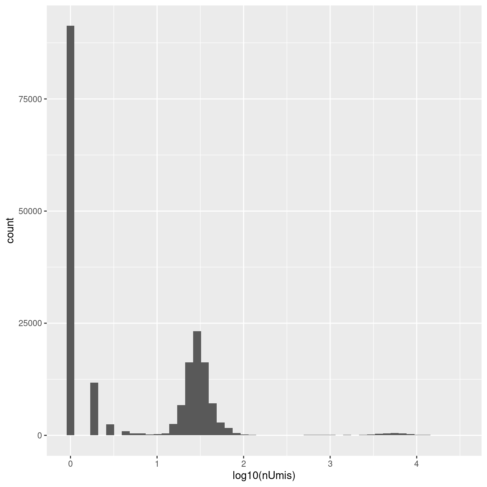
Library size varies widely, both amongst empty droplets and droplets carrying cells, mostly due to:
- variation in droplet size,
- amplification efficiency,
- sequencing
Most cell counting methods try to identify the library size that best distinguishes empty from cell-carrying droplets.
4.7.1 Mixture model
This method by default fits a mixture of two normal distributions to the logged library sizes:
- one with a small mean for empty droplets
- the other with a higher mean for cell-carrying droplets
set.seed(100)
# get package
library("mixtools")
# have library sizes on a log10 scale
log10_lib_size <- log10(libSizeDf$nUmis)
# fit mixture
mix <- normalmixEM(log10_lib_size,
mu=c(log10(10), log10(100), log10(10000)),
maxrestarts=50, epsilon = 1e-03)## One of the variances is going to zero; trying new starting values.
## One of the variances is going to zero; trying new starting values.
## One of the variances is going to zero; trying new starting values.
## One of the variances is going to zero; trying new starting values.
## One of the variances is going to zero; trying new starting values.
## One of the variances is going to zero; trying new starting values.
## One of the variances is going to zero; trying new starting values.
## One of the variances is going to zero; trying new starting values.
## One of the variances is going to zero; trying new starting values.
## One of the variances is going to zero; trying new starting values.
## One of the variances is going to zero; trying new starting values.
## One of the variances is going to zero; trying new starting values.
## One of the variances is going to zero; trying new starting values.
## One of the variances is going to zero; trying new starting values.
## One of the variances is going to zero; trying new starting values.
## One of the variances is going to zero; trying new starting values.
## One of the variances is going to zero; trying new starting values.
## One of the variances is going to zero; trying new starting values.
## One of the variances is going to zero; trying new starting values.
## One of the variances is going to zero; trying new starting values.
## One of the variances is going to zero; trying new starting values.
## number of iterations= 64# plot
p1 <- dnorm(log10_lib_size, mean=mix$mu[1], sd=mix$sigma[1])
p2 <- dnorm(log10_lib_size, mean=mix$mu[2], sd=mix$sigma[2])
p3 <- dnorm(log10_lib_size, mean=mix$mu[3], sd=mix$sigma[3])
pList <- list(p1, p2, p3)
if (mix$mu[1] < mix$mu[2]) {
split <- min(log10_lib_size[p1 < p2])
} else {
split <- min(log10_lib_size[p2 < p1])
}
# find densities with the higest means:
i1 <- which(order(mix$mu)==2)
i2 <- which(order(mix$mu)==3)
# find intersection:
dd0 <- data.frame(log10_lib_size=log10_lib_size,
#p1, p2, p3)
pA=pList[[i1]],
pB=pList[[i2]])
split <- dd0 %>%
filter(pA < pB & mix$mu[i1] < log10_lib_size) %>%
arrange(log10_lib_size) %>%
head(n=1) %>%
pull(log10_lib_size)
# show split on plot:
plot(mix, which=2, xlab2="log10(mol per cell)")
# get density for each distribution:
#log10_lib_size <- log10(libSizeDf$nUmis)
abline(v=split, lwd=2)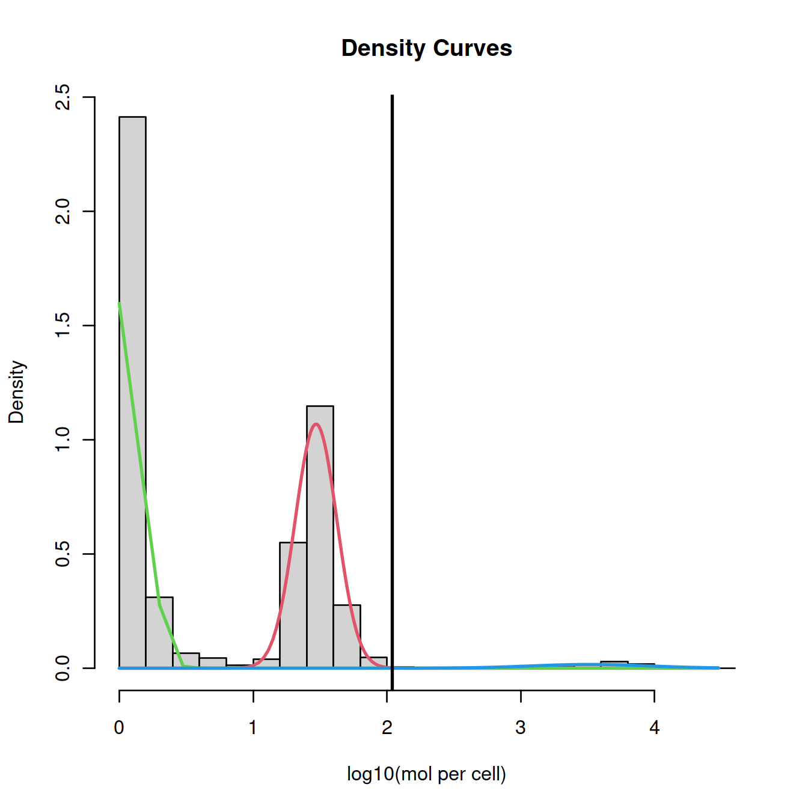
4.7.2 Barcode rank plot
The barcode rank plot shows the library sizes against their rank in decreasing order, for the first 10000 droplets only.
barcode_rank <- rank(-libSizeDf$nUmis)
plot(barcode_rank, libSizeDf$nUmis, xlim=c(1,10000), ylab="library size")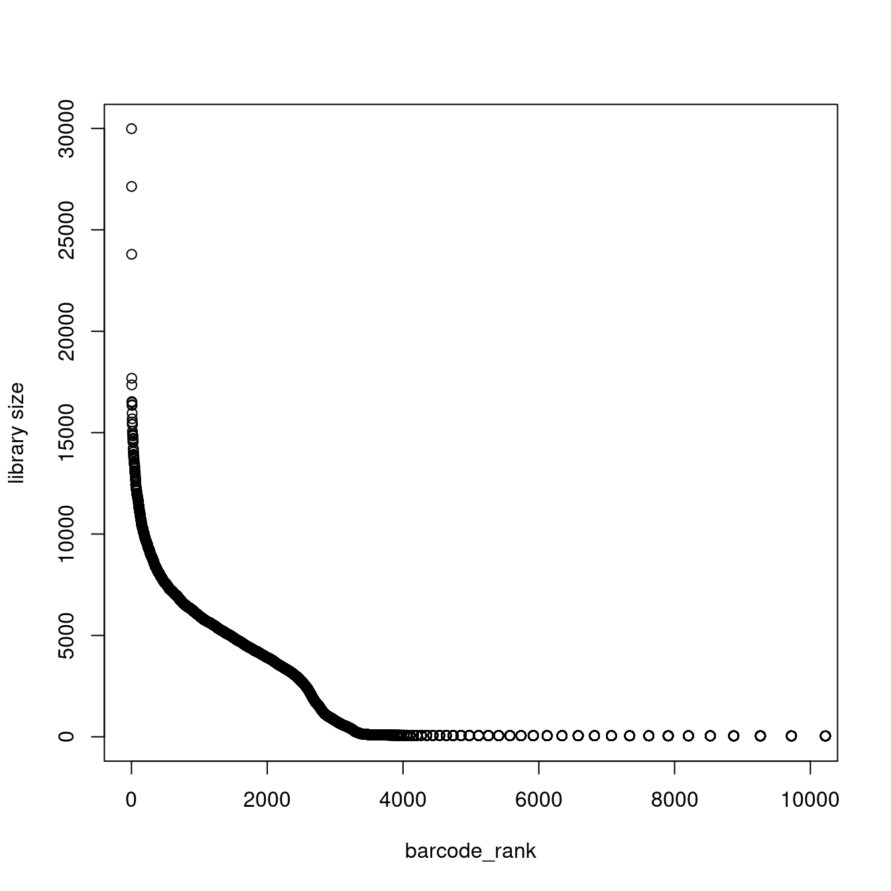
Given the exponential shape of the curve above, library sizes can be shown on the log10 scale:
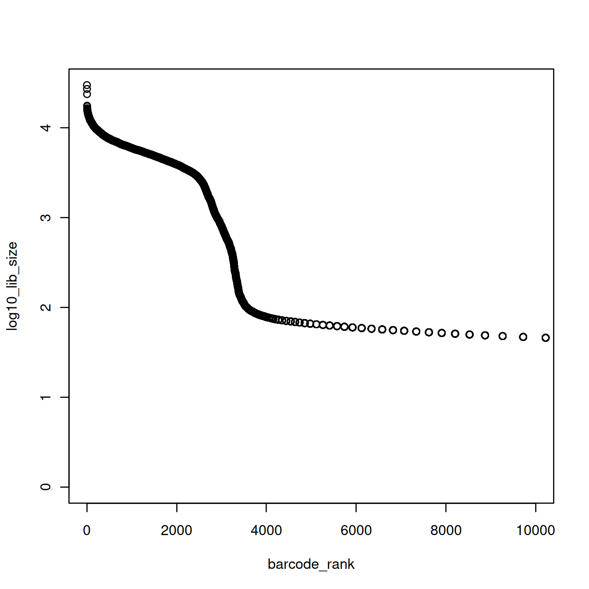
The plot above shows that the majority of droplets have fewer than 100 UMIs, e.g. droplets with rank greater than 4000. We will redraw the plot to focus on droplets with lower ranks, by using the log10 scale for the x-axis.

The point on the curve where it drops sharply may be used as the split point. Before that point library sizes are high, because droplets carry a cell. After that point, library sizes are far smaller because droplets do not carry a cell, only ambient RNA (… or do they?).
Here, we could ‘visually’ approximate the number of cells to 2500. There are however more robust and convenient methods.
4.7.3 Inflection point
We could also compute the inflection point of the curve.
o <- order(barcode_rank)
log10_lib_size <- log10_lib_size[o]
barcode_rank <- barcode_rank[o]
rawdiff <- diff(log10_lib_size)/diff(barcode_rank)
inflection <- which(rawdiff == min(rawdiff[100:length(rawdiff)], na.rm=TRUE))
plot(x=log10(barcode_rank),
y=log10_lib_size,
xlim=log10(c(1,10000)))
abline(v=log10(inflection), col="red", lwd=2)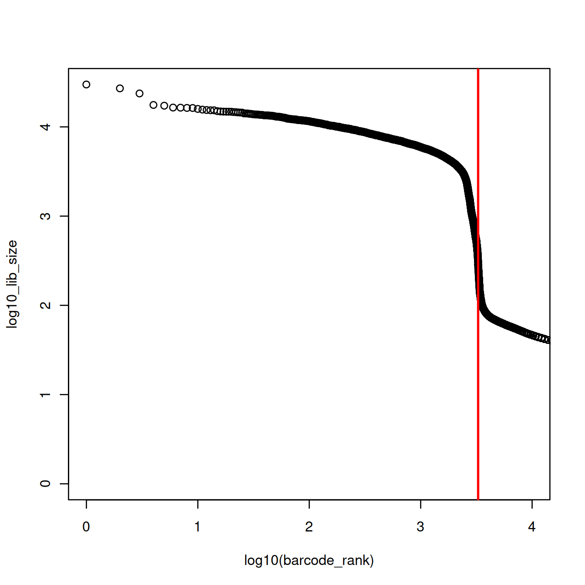
The inflection is at 3279 UMIs (3.5157414 on the log10 scale). 2306 droplets have at least these many UMIs and would thus contain one cell (or more).
4.7.4 Cellranger v1 and v2
Given an expected number of cells, cellranger used to assume a ~10-fold range of library sizes for real cells and estimate this range (cellranger (v1 and v2). The threshold was defined as the 99th quantile of the library size, divided by 10.
# approximate number of cells expected:
n_cells <- 2500
# CellRanger
totals <- sort(libSizeDf$nUmis, decreasing = TRUE)
# 99th percentile of top n_cells divided by 10
thresh = totals[round(0.01*n_cells)]/10
plot(x=log10(seq(1,10000)),
y=log10(totals)[1:10000]
)
abline(h=log10(thresh), col="red", lwd=2)
The threshold is at 1452 UMIs and 2773 cells are detected.
4.7.5 DropletUtils and EmptyDrops
The DropletUtils package offers utilities to analyse droplet-based data, including cell counting using the library size as seen above. These simple approaches may exclude droplets with small or quiet cells with low RNA content. The emptyDrops method calls cells by first computing the expression profile for droplets with RNA content so low they almost certainly do not contain any cell: the ‘background’ or ‘ambient’ profile. The method then tests each non-background droplet for significant difference in expression profile.
Let’s first check the knee and inflection methods.
br.out <- barcodeRanks(counts(sce.raw))
plot(br.out$rank, br.out$total, log="xy", xlab="Rank", ylab="Total UMI count")
o <- order(br.out$rank)
lines(br.out$rank[o], br.out$fitted[o], col="red")
abline(h=metadata(br.out)$knee, col="dodgerblue", lty=2)
abline(h=metadata(br.out)$inflection, col="forestgreen", lty=2)
legend("bottomleft", lty=2, col=c("dodgerblue", "forestgreen"),
legend=c("knee", "inflection"))
Testing for empty droplets.
We will call cells with a false discovery rate (FDR) of 0.1% so that at most 1 in 1000 droplets called may be empty.
# a bit slow
# significance is computed by simulation so we set a seed for reproducibility
set.seed(100)
# run analysis:
e.out <- emptyDrops(counts(sce.raw))
e.out## DataFrame with 737280 rows and 5 columns
## Total LogProb PValue Limited FDR
## <integer> <numeric> <numeric> <logical> <numeric>
## AAACCTGAGAAACCAT-1 0 NA NA NA NA
## AAACCTGAGAAACCGC-1 0 NA NA NA NA
## AAACCTGAGAAACCTA-1 31 NA NA NA NA
## AAACCTGAGAAACGAG-1 0 NA NA NA NA
## AAACCTGAGAAACGCC-1 0 NA NA NA NA
## ... ... ... ... ... ...
## TTTGTCATCTTTACAC-1 0 NA NA NA NA
## TTTGTCATCTTTACGT-1 1 NA NA NA NA
## TTTGTCATCTTTAGGG-1 0 NA NA NA NA
## TTTGTCATCTTTAGTC-1 26 NA NA NA NA
## TTTGTCATCTTTCCTC-1 0 NA NA NA NANAs are assigned to droplets used to compute the ambient profile.
Get numbers of droplets in each class defined by FDR and the cut-off used:
## Mode FALSE TRUE NA's
## logical 487 3075 733718The test significance is computed by permutation. For each droplet tested, the number of permutations may limit the value of the p-value. This information is available in the ‘Limited’ column. If ‘Limited’ is ‘TRUE’ for any non-significant droplet, the number of permutations was too low, should be increased and the analysis re-run.
comment="emptyDrops() uses Monte Carlo simulations to compute p-values for the multinomial sampling transcripts from the ambient pool. The number of Monte Carlo iterations determines the lower bound for the p-values (Phipson and Smyth 2010). The Limited field in the output indicates whether or not the computed p-value for a particular barcode is bounded by the number of iterations. If any non-significant barcodes are TRUE for Limited, we may need to increase the number of iterations. A larger number of iterations will result in a lower p-value for these barcodes, which may allow them to be detected after correcting for multiple testing."
table(Sig=e.out$FDR <= 0.001, Limited=e.out$Limited)## Limited
## Sig FALSE TRUE
## FALSE 487 0
## TRUE 76 2999Let’s check that the background comprises only empty droplets. If the droplets used to define the background profile are indeed empty, testing them should result in a flat distribution of p-values. Let’s test the ‘ambient’ droplets and draw the p-value distribution.
commment="As mentioned above, emptyDrops() assumes that barcodes with low total UMI counts are empty droplets. Thus, the null hypothesis should be true for all of these barcodes. We can check whether the hypothesis testing procedure holds its size by examining the distribution of p-values for low-total barcodes with test.ambient=TRUE. Ideally, the distribution should be close to uniform (Figure 6.6). Large peaks near zero indicate that barcodes with total counts below lower are not all ambient in origin. This can be resolved by decreasing lower further to ensure that barcodes corresponding to droplets with very small cells are not used to estimate the ambient profile."
set.seed(100)
limit <- 100
all.out <- emptyDrops(counts(sce.raw), lower=limit, test.ambient=TRUE)
hist(all.out$PValue[all.out$Total <= limit & all.out$Total > 0],
xlab="P-value", main="", col="grey80") 
The distribution of p-values looks uniform with no large peak for small values: no cell in these droplets.
To evaluate the outcome of the analysis, we will plot the strength of the evidence against library size.
Number of cells detected: 3075.
The plot plot shows the strength of the evidence against the library size. Each point is a droplet coloured:
- in black if without cell,
- in red if with a cell (or more)
- in green if with a cell (or more) as defined with
emptyDropsbut not the inflection method.
# colour:
cellColour <- ifelse(is.cell, "red", "black") # rep("black", nrow((e.out)))
# boolean for presence of cells as defined by the inflection method
tmpBoolInflex <- e.out$Total > metadata(br.out)$inflection
# boolean for presence of cells as defined by the emptyDrops method
tmpBoolSmall <- e.out$FDR <= 0.001
tmpBoolRecov <- !tmpBoolInflex & tmpBoolSmall
cellColour[tmpBoolRecov] <- "green" # 'recovered' cells
# plot strength of significance vs library size
plot(log10(e.out$Total),
-e.out$LogProb,
col=cellColour,
xlim=c(2,max(log10(e.out$Total))),
xlab="Total UMI count",
ylab="-Log Probability")
# add point to show 'recovered' cell on top
points(log10(e.out$Total)[tmpBoolRecov],
-e.out$LogProb[tmpBoolRecov],
pch=16,
col="green")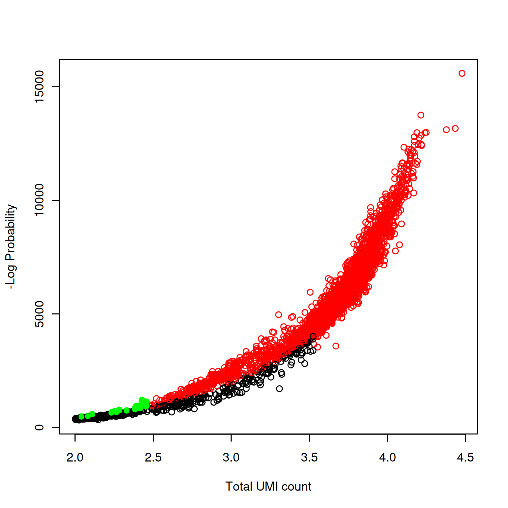
Let’s filter out empty droplets.
comment="Once we are satisfied with the performance of emptyDrops(), we subset our SingleCellExperiment object to retain only the detected cells. Discerning readers will notice the use of which(), which conveniently removes the NAs prior to the subsetting."
sce.ed <- sce.raw[,which(e.out$FDR <= 0.001)] # ed for empty droplet
rm(sce.raw);
gc();## used (Mb) gc trigger (Mb) max used (Mb)
## Ncells 9065272 484.2 16305644 870.9 16305644 870.9
## Vcells 59369154 453.0 215050788 1640.8 336016856 2563.7And check the new SCE object:
## class: SingleCellExperiment
## dim: 33538 3075
## metadata(1): Samples
## assays(1): counts
## rownames(33538): ENSG00000243485 ENSG00000237613 ... ENSG00000277475
## ENSG00000268674
## rowData names(3): ID Symbol Type
## colnames(3075): AAACCTGAGACTTTCG-1 AAACCTGGTCTTCAAG-1 ...
## TTTGTCACAGGCTCAC-1 TTTGTCAGTTCGGCAC-1
## colData names(2): Sample Barcode
## reducedDimNames(0):
## altExpNames(0):Cell calling in cellranger v3 uses a method similar to emptyDrops() and a ‘filtered matrix’ is generated that only keeps droplets deemed to contain a cell. We will load these filtered matrices now.
text="emptyDrops() already removes cells with very low library sizes or (by association) low numbers of expressed genes. Thus, further filtering on these metrics is not strictly necessary. It may still be desirable to filter on both of these metrics to remove non-empty droplets containing cell fragments or stripped nuclei that were not caught by the mitochondrial filter. However, this should be weighed against the risk of losing genuine cell types as discussed in Section 6.3.2.2."4.8 Load filtered matrices
Each sample was analysed with cellranger separately. We load filtered matrices one sample at a time, showing for each the name and number of features and cells.
# a bit slow
# load data:
sce.list <- vector("list", length = nrow(sampleSheet))
for (i in 1:nrow(sampleSheet))
{
print(sprintf("'Run' %s, 'Sample.Name' %s", sampleSheet[i,"Run"], sampleSheet[i,"Sample.Name"]))
sample.path <- sprintf("%s/%s/%s/outs/filtered_feature_bc_matrix/",
sprintf("%s/%s/grch38300",
projDir,
ifelse(sampleSheet[i,"source_name"] == "ABMMC",
"Hca",
"CaronBourque2020")),
sampleSheet[i,"Run"],
sampleSheet[i,"Run"])
sce.list[[i]] <- read10xCounts(sample.path)
print(dim(sce.list[[i]]))
}## [1] "'Run' SRR9264343, 'Sample.Name' GSM3872434"
## [1] 33538 3088
## [1] "'Run' SRR9264344, 'Sample.Name' GSM3872435"
## [1] 33538 6678
## [1] "'Run' SRR9264345, 'Sample.Name' GSM3872436"
## [1] 33538 5054
## [1] "'Run' SRR9264346, 'Sample.Name' GSM3872437"
## [1] 33538 6096
## [1] "'Run' SRR9264347, 'Sample.Name' GSM3872438"
## [1] 33538 5442
## [1] "'Run' SRR9264348, 'Sample.Name' GSM3872439"
## [1] 33538 5502
## [1] "'Run' SRR9264349, 'Sample.Name' GSM3872440"
## [1] 33538 4126
## [1] "'Run' SRR9264350, 'Sample.Name' GSM3872441"
## [1] 33538 3741
## [1] "'Run' SRR9264351, 'Sample.Name' GSM3872442"
## [1] 33538 978
## [1] "'Run' SRR9264352, 'Sample.Name' GSM3872442"
## [1] 33538 1150
## [1] "'Run' SRR9264353, 'Sample.Name' GSM3872443"
## [1] 33538 4964
## [1] "'Run' SRR9264354, 'Sample.Name' GSM3872444"
## [1] 33538 4255
## [1] "'Run' MantonBM1, 'Sample.Name' MantonBM1"
## [1] 33538 23283
## [1] "'Run' MantonBM2, 'Sample.Name' MantonBM2"
## [1] 33538 25055
## [1] "'Run' MantonBM3, 'Sample.Name' MantonBM3"
## [1] 33538 24548
## [1] "'Run' MantonBM4, 'Sample.Name' MantonBM4"
## [1] 33538 26478
## [1] "'Run' MantonBM5, 'Sample.Name' MantonBM5"
## [1] 33538 26383
## [1] "'Run' MantonBM6, 'Sample.Name' MantonBM6"
## [1] 33538 22801
## [1] "'Run' MantonBM7, 'Sample.Name' MantonBM7"
## [1] 33538 24372
## [1] "'Run' MantonBM8, 'Sample.Name' MantonBM8"
## [1] 33538 24860Let’s combine all 20 samples into a single object.
We first check the feature lists are identical.
# check row names are the same
# compare to that for the first sample
rowNames1 <- rownames(sce.list[[1]])
for (i in 2:nrow(sampleSheet))
{
print(identical(rowNames1, rownames(sce.list[[i]])))
}## [1] TRUE
## [1] TRUE
## [1] TRUE
## [1] TRUE
## [1] TRUE
## [1] TRUE
## [1] TRUE
## [1] TRUE
## [1] TRUE
## [1] TRUE
## [1] TRUE
## [1] TRUE
## [1] TRUE
## [1] TRUE
## [1] TRUE
## [1] TRUE
## [1] TRUE
## [1] TRUE
## [1] TRUEA cell barcode comprises the actual sequence and a ‘group ID’, e.g. AAACCTGAGAAACCAT-1. The latter helps distinguish cells that share the same sequence but come from different samples. As each sample was analysed separately, the group ID is set to 1 in all data sets. To pool these data sets we first need to change group IDs so cell barcodes are unique across all samples. We will use the position of the sample in the sample sheet.
sce <- sce.list[[1]]
colData(sce)$Barcode <- gsub("([0-9])$", 1, colData(sce)$Barcode)
print(head(colData(sce)$Barcode))## [1] "AAACCTGAGACTTTCG-1" "AAACCTGGTCTTCAAG-1" "AAACCTGGTGCAACTT-1"
## [4] "AAACCTGGTGTTGAGG-1" "AAACCTGTCCCAAGTA-1" "AAACCTGTCGAATGCT-1"## [1] "TTTGGTTTCCGAAGAG-1" "TTTGGTTTCTTTAGGG-1" "TTTGTCAAGAAACGAG-1"
## [4] "TTTGTCAAGGACGAAA-1" "TTTGTCACAGGCTCAC-1" "TTTGTCAGTTCGGCAC-1"for (i in 2:nrow(sampleSheet))
{
sce.tmp <- sce.list[[i]]
colData(sce.tmp)$Barcode <- gsub("([0-9])$", i, colData(sce.tmp)$Barcode)
sce <- cbind(sce, sce.tmp)
#print(head(colData(sce)$Barcode))
print(tail(colData(sce)$Barcode, 2))
}## [1] "TTTGTCATCTTAACCT-2" "TTTGTCATCTTCTGGC-2"
## [1] "TTTGTCATCCGCGGTA-3" "TTTGTCATCCGGGTGT-3"
## [1] "TTTGTCATCACTCTTA-4" "TTTGTCATCTATCCCG-4"
## [1] "TTTGTCAGTTCCCTTG-5" "TTTGTCATCGACGGAA-5"
## [1] "TTTGTCATCCTTTCGG-6" "TTTGTCATCTATGTGG-6"
## [1] "TTTGTCAGTCATTAGC-7" "TTTGTCAGTTGTGGCC-7"
## [1] "TTTGTCATCTACCAGA-8" "TTTGTCATCTGCAGTA-8"
## [1] "TTTGGTTGTGCATCTA-9" "TTTGTCACAGCTCGAC-9"
## [1] "TTTGTCAGTAAATGTG-10" "TTTGTCAGTACAAGTA-10"
## [1] "TTTGTCATCACCCTCA-11" "TTTGTCATCTTCATGT-11"
## [1] "TTTGTCATCAGTTGAC-12" "TTTGTCATCTCGTTTA-12"
## [1] "TTTGTCATCTTTACAC-13" "TTTGTCATCTTTCCTC-13"
## [1] "TTTGTCATCGACGGAA-14" "TTTGTCATCGCCTGAG-14"
## [1] "TTTGTCATCTTGTACT-15" "TTTGTCATCTTTAGGG-15"
## [1] "TTTGTCATCGGATGGA-16" "TTTGTCATCGTGGACC-16"
## [1] "TTTGTCATCTGCGGCA-17" "TTTGTCATCTGCGTAA-17"
## [1] "TTTGTCATCTAACTGG-18" "TTTGTCATCTGCGGCA-18"
## [1] "TTTGTCATCTGGGCCA-19" "TTTGTCATCTTGTATC-19"
## [1] "TTTGTCATCTTGAGAC-20" "TTTGTCATCTTGTATC-20"We now add the sample sheet information to the object metadata.
colDataOrig <- colData(sce)
# split path:
tmpList <- strsplit(colDataOrig$Sample, split="/")
# get Run ID, to use to match sample in the meta data and sample sheet objects:
tmpVec <- unlist(lapply(tmpList, function(x){x[9]}))
colData(sce)$Run <- tmpVec
# merge:
colData(sce) <- colData(sce) %>%
data.frame %>%
left_join(sampleSheet[,splShtColToKeep], "Run") %>%
relocate() %>%
DataFrameLet’s save the object for future reference.
4.9 Properties of scRNA-seq data
# a bit slow
# TODO first remove emtpy droplets the mol.info data
mol.info$data
head(mol.info$genes)
dd <- mol.info$data %>% data.frame()
dd$umi <- as.character(dd$umi)
tmpFn <- sprintf("%s/%s/Robjects/sce_preProc_ampDf2.Rds", projDir, outDirBit)
if(FALSE) # slow
{
ampDf <- dd %>%
filter(paste(cell,gem_group, sep="-") %in% sce$Barcode) %>%
group_by(cell, gene) %>%
summarise(nUmis = n(), totReads=sum(reads)) %>%
data.frame()
# Write object to file
saveRDS(ampDf, tmpFn)
} else {
ampDf <- readRDS(tmpFn)
}
rm(tmpFn)
#summary(ampDf$nUmis)
#summary(ampDf$totReads)
hist(log2(ampDf$nUmis), n=100)
hist(log2(ampDf$totReads), n=100)sp2 <- ggplot(ampDf, aes(x=nUmis, y=totReads)) +
geom_bin2d(bins = 50) +
scale_fill_continuous(type = "viridis") +
scale_x_continuous(trans='log2') +
scale_y_continuous(trans='log2') +
theme_bw()
sp2
#rm(mol.info)
rm(ampDf)
gc()The number and identity of genes detected in a cell vary across cells: the total number of genes detected across all cells is far larger than the number of genes per cell.
Total number of genes detected across cells:
# for each gene, compute total number of UMIs across all cells,
# then counts genes with at least one UMI:
countsRowSums <- rowSums(counts(sce))
sum(countsRowSums > 0)## [1] 27795Summary of the distribution of the number of genes detected per cell:
# for each cell count number of genes with at least 1 UMI
# then compute distribution moments:
summary(colSums(counts(sce) > 0))## Min. 1st Qu. Median Mean 3rd Qu. Max.
## 26 724 873 1173 1262 8077Now let’s plot for each gene, the total number of UMIs and the proportion of cells that express it. Lowly expressed genes tend to be detected in a large proportion of cells. The higher the overall expression the lower the proportion of cells.
# very slow; many points
# skip in DEV, TODO: write plot to file and embed that.
# x-axis: total number of UMIs for the gene across all cells
# y-axis: fraction of cells expressing the gene
tmpFn <- sprintf("%s/%s/%s/corelLibSizePropCellExpress%s.png",
projDir, outDirBit, qcPlotDirBit, setSuf)
png(tmpFn)
plot(
# x-axis: nb UMI per gene across all cells
countsRowSums,
# y-axis: proportion of cells that do express the cell
rowMeans(counts(sce) > 0),
log = "x",
xlab="total number of UMIs",
ylab="proportion of cells expressing the gene"
)
dev.off()dd <- data.frame("countsRowSums" = countsRowSums,
"propCellsExpr" = rowMeans(counts(sce) > 0))
head(dd)## countsRowSums propCellsExpr
## ENSG00000243485 3 1.205526e-05
## ENSG00000237613 0 0.000000e+00
## ENSG00000186092 0 0.000000e+00
## ENSG00000238009 203 8.157393e-04
## ENSG00000239945 5 2.009210e-05
## ENSG00000239906 0 0.000000e+00sp <- ggplot(dd, aes(x=countsRowSums, y=propCellsExpr)) +
geom_point(alpha=0.3) +
scale_x_continuous(trans='log10') +
geom_density_2d() +
xlab("total number of UMIs") +
ylab("proportion of cells expressing the gene")
sp
ggExtra::ggMarginal(sp)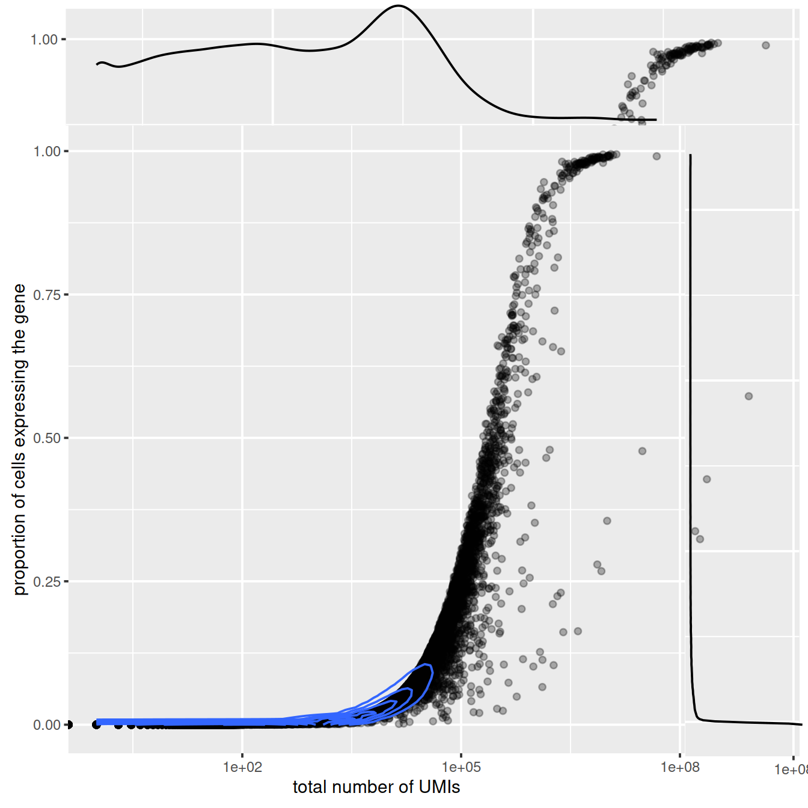
tmpFn <- sprintf("%s/%s/%s/corelLibSizePropCellExpress%s_2.png",
projDir, outDirBit, qcPlotDirBit, setSuf)
tmpFn## [1] "/ssd/personal/baller01/20200511_FernandesM_ME_crukBiSs2020/AnaWiSce/Ana1/Plots/Qc/corelLibSizePropCellExpress_allCells_2.png"getwd()
tmpFn <- sprintf("%s/%s/corelLibSizePropCellExpress%s_2.png",
dirRel, qcPlotDirBit, setSuf)
knitr::include_graphics(tmpFn, auto_pdf = TRUE)
rm(tmpFn)Count genes that are not ‘expressed’ (detected):
## not.expressed
## FALSE TRUE
## 27795 5743Plot the percentage of counts per gene and show genes with the highest UMI counts:
#Compute the relative expression of each gene per cell
# a bit slow
rel_expression <- t( t(counts(sce)) / Matrix::colSums(counts(sce))) * 100
rownames(rel_expression) <- rowData(sce)$Symbol
most_expressed <- sort(Matrix::rowSums( rel_expression ),T)[20:1] / ncol(sce)
boxplot( as.matrix(t(rel_expression[names(most_expressed),])),
cex=.1,
las=1,
xlab="% total count per cell",
col=scales::hue_pal()(20)[20:1],
horizontal=TRUE)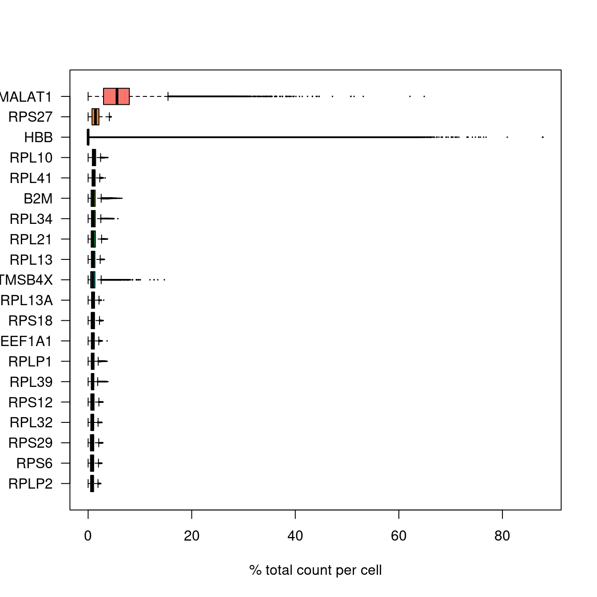
Mind that we have combined two data sets here. It may be interesting to count non-expressed genes in each set separately.
4.10 Quality control
Cell calling performed above does not inform on the quality of the library in each of the droplets kept. Poor-quality cells, or rather droplets, may be caused by cell damage during dissociation or failed library preparation. They usually have low UMI counts, few genes detected and/or high mitochondrial content. The presence may affect normalisation, assessment of cell population heterogeneity, clustering and trajectory:
- Normalisation: Contaminating genes, ‘the ambient RNA’, are detected at low levels in all libraires. In low quality libraries with low RNA content, scaling will increase counts for these genes more than for better-quality cells, resulting in their apparent upregulation in these cells and increased variance overall.
- Cell population heterogeneity: variance estimation and dimensionality reduction with PCA where the first principal component will be correlated with library size, rather than biology.
- Clustering and trajectory: higher mitochondrial and/or nuclear RNA content may cause low-quality cells to cluster separately or form states or trajectories between distinct cell types.
We will now exclude lowly expressed features and identify low-quality cells using the following metrics mostly:
- library size, i.e. the total number of UMIs per cell
- number of features detected per cell
- mitochondrial content, i.e. the proportion of UMIs that map to mitochondrial genes, with higher values consistent with leakage from the cytoplasm of RNA, but not mitochodria
We will first annotate genes, to know which lie in the mitochondrial genome, then use scater’s addPerCellQC() to compute various metrics.
Annotate genes with biomaRt.
# retrieve the feature information
gene.info <- rowData(sce)
# setup the biomaRt connection to Ensembl using the correct species genome (hsapiens_gene_ensembl)
ensembl <- useEnsembl(biomart='ensembl',
dataset='hsapiens_gene_ensembl',
#mirror = "www")
#mirror = "useast")
mirror = "uswest")
#mirror = "asia")
ensembl = useMart(biomart="ENSEMBL_MART_ENSEMBL",
dataset="hsapiens_gene_ensembl",
host="uswest.ensembl.org",
ensemblRedirect = FALSE)
# retrieve the attributes of interest from biomaRt using the Ensembl gene ID as the key
# beware that this will only retrieve information for matching IDs
gene_symbol <- getBM(attributes=c('ensembl_gene_id',
'external_gene_name',
'chromosome_name',
'start_position',
'end_position',
'strand'),
filters='ensembl_gene_id',
mart=ensembl,
values=gene.info[, 1])
# create a new data frame of the feature information
gene.merge <- merge(gene_symbol, gene.info, by.x=c('ensembl_gene_id'), by.y=c('ID'), all.y=TRUE)
rownames(gene.merge) <- gene.merge$ensembl_gene_id
# set the order for the same as the original gene information
gene.merge <- gene.merge[gene.info[, 1], ]
# reset the rowdata on the SCE object to contain all of this information
rowData(sce) <- gene.merge# slow
# Write object to file
tmpFn <- sprintf("%s/%s/Robjects/sce_postBiomart%s.Rds",
projDir, outDirBit, setSuf)
saveRDS(sce, tmpFn)# Read object in:
tmpFn <- sprintf("%s/%s/Robjects/sce_postBiomart%s.Rds",
projDir, outDirBit, setSuf)
sce <- readRDS(tmpFn)##
## 1 10 11 12 13 14 15
## 3127 1221 1910 1748 662 1380 1121
## 16 17 18 19 2 20 21
## 1518 1880 654 1989 2263 889 499
## 22 3 4 5 6 7 8
## 831 1704 1345 1646 1616 1526 1303
## 9 GL000009.2 GL000194.1 GL000195.1 GL000205.2 GL000213.1 GL000218.1
## 1211 1 2 2 1 1 1
## GL000219.1 KI270711.1 KI270713.1 KI270721.1 KI270726.1 KI270727.1 KI270728.1
## 1 1 2 1 2 4 6
## KI270731.1 KI270734.1 MT X Y
## 1 3 13 1067 97Calculate and store QC metrics for genes with addPerFeatureQC() and for cells with addPerCellQC().
# long
# for genes
sce <- addPerFeatureQC(sce)
head(rowData(sce)) %>%
as.data.frame() %>%
datatable(rownames = FALSE) # ENS IDThree columns of interest for cells:
- ‘sum’: total UMI count
- ‘detected’: number of features (genes) detected
- ‘subsets_Mito_percent’: percentage of reads mapped to mitochondrial transcripts
# for cells
sce <- addPerCellQC(sce, subsets=list(Mito=is.mito))
head(colData(sce)) %>%
as.data.frame() %>%
datatable(rownames = FALSE)# Write object to file
tmpFn <- sprintf("%s/%s/Robjects/sce_postAddQc%s.Rds",
projDir, outDirBit, setSuf)
saveRDS(sce, tmpFn)# Read object in:
tmpFn <- sprintf("%s/%s/Robjects/sce_postAddQc%s.Rds",
projDir, outDirBit, setSuf)
sce <- readRDS(tmpFn)4.10.1 QC metric distribution
Overall:
par(mfrow=c(1, 2))
hist(log10(sce$sum), breaks=20, col="grey80", xlab="Log-total UMI count", main="")
hist(sce$subsets_Mito_percent, breaks=20, col="grey80", xlab="Proportion of reads in mitochondrial genes", main="")
abline(v=20, lty=2, col='purple')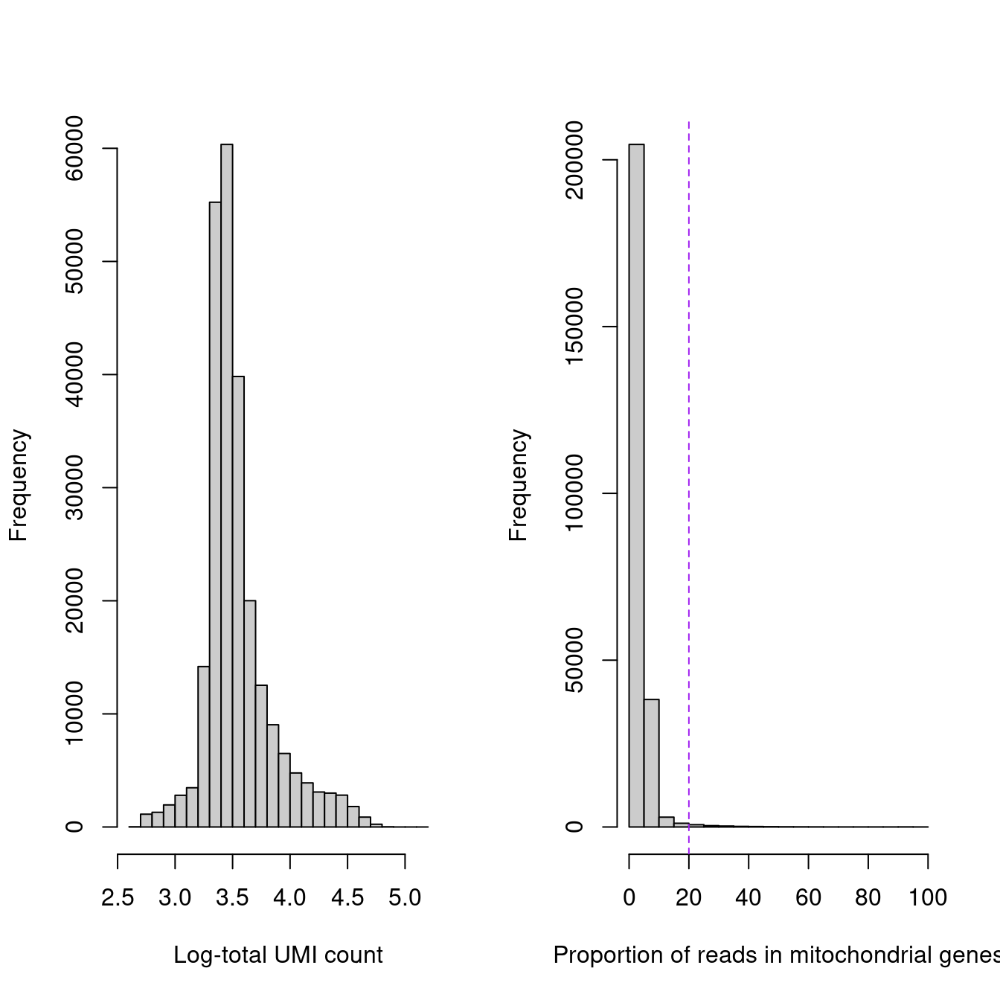
Per sample group:
sce$source_name <- factor(sce$source_name)
sce$block <- sce$source_name
sce$setName <- ifelse(grepl("ABMMC", sce$source_name), "Hca", "Caron")# ok, but little gain in splitting by Caron and Hca,
# better set levels to have PBMMC last and use ggplot with colours.
tmpFn <- sprintf("%s/%s/%s/qc_metricDistrib_plotColData2%s.png",
projDir, outDirBit, qcPlotDirBit, setSuf)
png(tmpFn)
# violin plots
gridExtra::grid.arrange(
plotColData(sce, x="block", y="sum",
other_fields="setName") + #facet_wrap(~setName) +
scale_y_log10() + ggtitle("Total count"),
plotColData(sce, x="block", y="detected",
other_fields="setName") + #facet_wrap(~setName) +
scale_y_log10() + ggtitle("Detected features"),
plotColData(sce, x="block", y="subsets_Mito_percent",
other_fields="setName") + # facet_wrap(~setName) +
ggtitle("Mito percent"),
ncol=1
)
dev.off()# eval=FALSE: see chunks below for each of the metrics separately
tmpFn <- sprintf("%s/%s/%s/qc_metricDistrib_plotColData2%s.png",
projDir, outDirBit, qcPlotDirBit, setSuf)
knitr::include_graphics(tmpFn, auto_pdf = TRUE)
rm(tmpFn)Library size (‘Total count’):
plotColData(sce, x="block", y="sum",
other_fields="setName") + #facet_wrap(~setName) +
scale_y_log10() + ggtitle("Total count")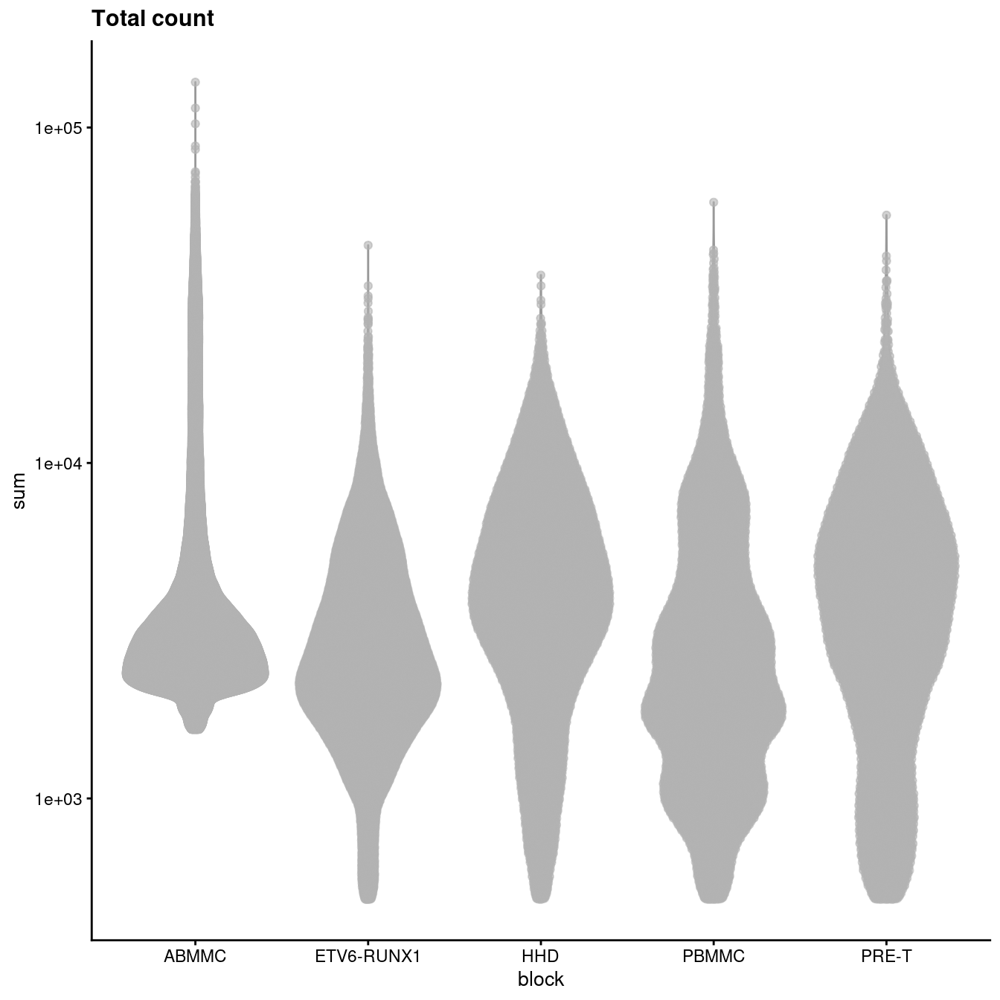
Number of genes (‘detected’):
plotColData(sce, x="block", y="detected",
other_fields="setName") + #facet_wrap(~setName) +
scale_y_log10() + ggtitle("Detected features")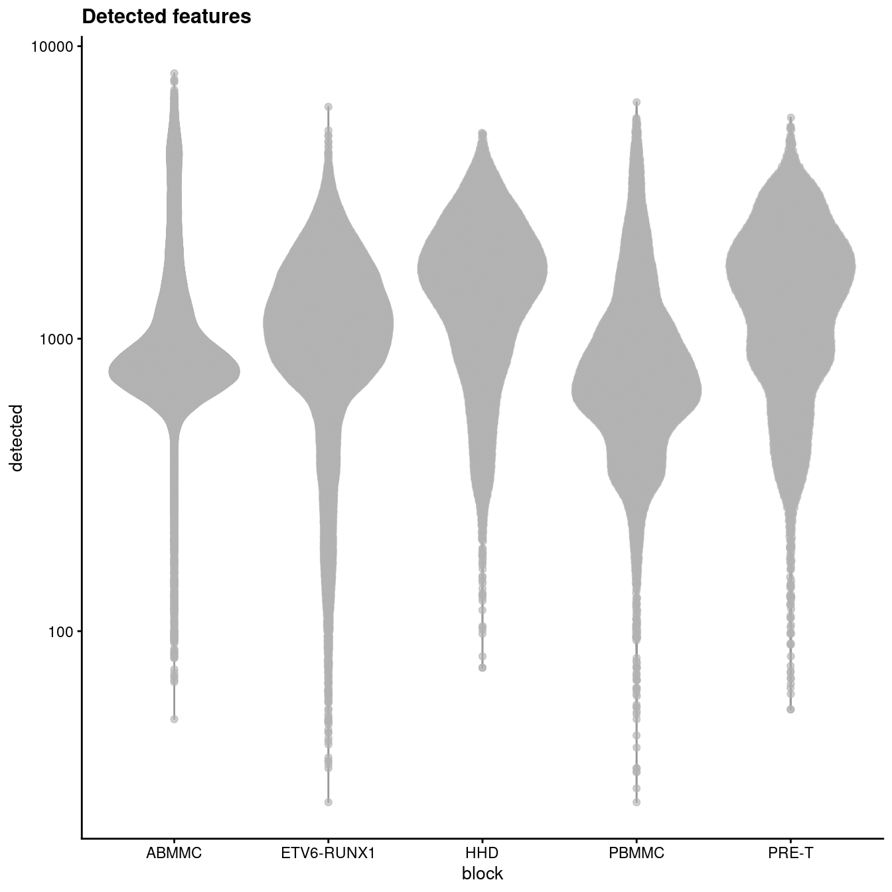
Mitochondrial content (‘subsets_Mito_percent’):
plotColData(sce, x="block", y="subsets_Mito_percent",
other_fields="setName") + # facet_wrap(~setName) +
ggtitle("Mito percent")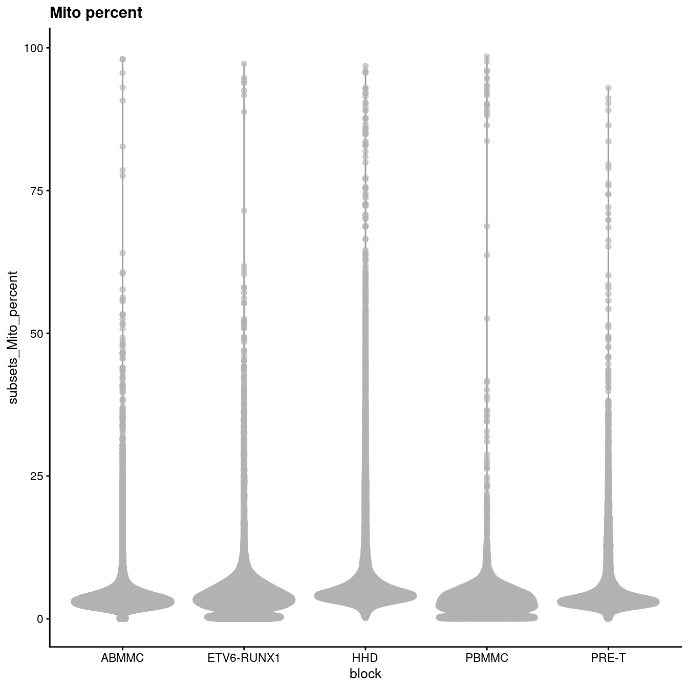
Correlation between the number of genes detected and library size (‘detected’ against ‘sum’):
sp <- ggplot(data.frame(colData(sce)),
aes(x=sum,
y=detected,
col=source_name)) +
geom_point(alpha=0.3)
sp + facet_wrap(~source_name)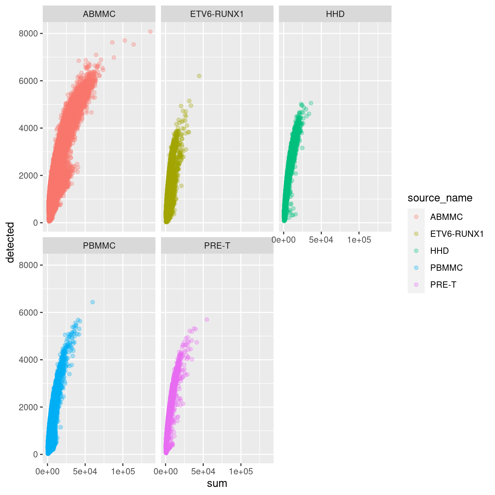
Correlation between the mitochondrial content and library size (‘subsets_Mito_percent’ against ‘sum’):
sp <- ggplot(data.frame(colData(sce)), aes(x=sum, y=detected, col=subsets_Mito_percent)) +
geom_point()
sp + facet_wrap(~source_name)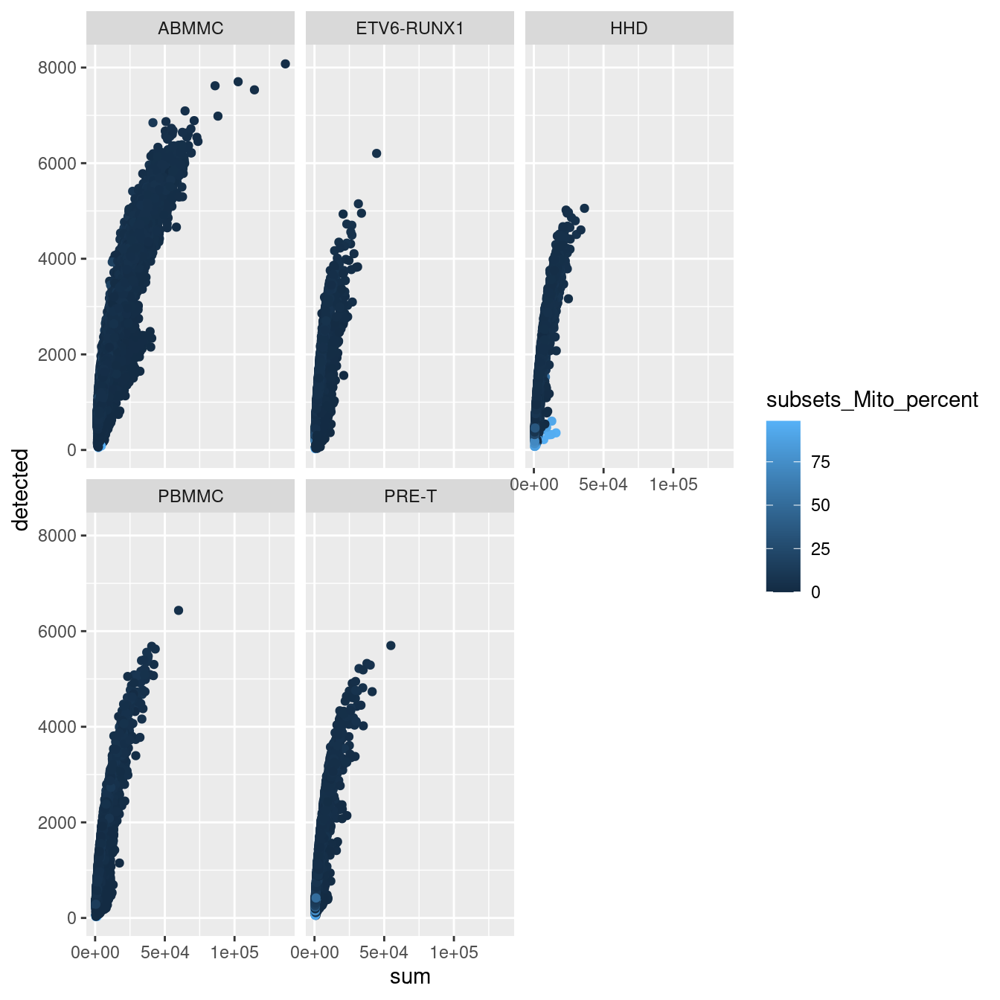
4.11 Identification of low-quality cells with adaptive thresholds
One can use hard threshold for the library size, number of genes detected and mitochondrial content. These will however vary across runs. It may therefore be preferable to rely on outlier detection to identify cells that markedly differ from most cells.
We saw above that the distribution of the QC metrics is close to Normal. Hence, we can detect outlier using the median and the median absolute deviation (MAD) from the median (not the mean and the standard deviation that both are sensitive to outliers).
For a given metric, an outlier value is one that lies over some number of MADs away from the median. A cell will be excluded if it is an outlier in the part of the range to avoid, for example low gene counts, or high mitochondrial content. For a normal distribution, a threshold defined with a distance of 3 MADs from the median retains about 99% of values.
4.11.1 Library size
For the library size we use the log scale to avoid negative values for lower part of the distribution.
## qc.lib2
## FALSE TRUE
## 245250 3604Threshold values:
## lower higher
## 920.8674 Inf4.11.2 Number of genes
For the number of genes detected we also use the log scale to avoid negative values for lower part of the distribution.
## qc.nexprs2
## FALSE TRUE
## 246349 2505Threshold values:
## lower higher
## 302.3803 Inf4.11.3 Mitochondrial content
For the mitochondrial content the exclusion zone is in the higher part of the distribution.
## qc.mito2
## FALSE TRUE
## 237080 11774Threshold values:
## lower higher
## -Inf 7.6130654.11.4 Summary
discard2 <- qc.lib2 | qc.nexprs2 | qc.mito2
# Summarize the number of cells removed for each reason.
DataFrame(LibSize=sum(qc.lib2),
NExprs=sum(qc.nexprs2),
MitoProp=sum(qc.mito2),
Total=sum(discard2))## DataFrame with 1 row and 4 columns
## LibSize NExprs MitoProp Total
## <integer> <integer> <integer> <integer>
## 1 3604 2505 11774 153864.11.5 All steps at once
The steps above may be run at once with quickPerCellQC():
4.11.6 Assumptions
Data quality depends on the tissue analysed, some being difficult to dissociate, e.g. brain, so that one level of QC stringency will not fit all data sets.
Filtering based on QC metrics as done here assumes that these QC metrics are not correlated with biology. This may not necessarily be true in highly heterogenous data sets where some cell types represented by good-quality cells may have low RNA content or high mitochondrial content.
4.12 Experimental factors
The two data sets analysed here may have been obtained in experiments with different settings, such as cell preparation or sequencing depth. Such differences between these two batches would affect the adaptive thresholds discussed above. We will now perform QC in each batch separately.
We will use the quickPerCellQC() ‘batch’ option.
batch.reasons <- quickPerCellQC(colData(sce), percent_subsets=c("subsets_Mito_percent"), batch=sce$setName)
colSums(as.matrix(batch.reasons))## low_lib_size low_n_features high_subsets_Mito_percent
## 0 1034 11046
## discard
## 12014Fewer cells are discarded, in particular because of small library size and low gene number.
But the differences are deeper as the two sets only partially overlap:
##
## FALSE TRUE
## FALSE 231781 1687
## TRUE 5059 10327# see chunks below for each of the metric separately
tmpFn <- sprintf("%s/%s/%s/qc_metricDistrib_plotColDataBatch%s.png",
projDir, outDirBit, qcPlotDirBit, setSuf)
png(tmpFn)
gridExtra::grid.arrange(
plotColData(sce, x="block", y="sum", colour_by="discard",
other_fields="setName") +
#facet_wrap(~setName) +
scale_y_log10() + ggtitle("Total count"),
plotColData(sce, x="block", y="detected", colour_by="discard",
other_fields="setName") +
#facet_wrap(~setName) +
scale_y_log10() + ggtitle("Detected features"),
plotColData(sce, x="block", y="subsets_Mito_percent",
colour_by="discard", other_fields="setName") +
#facet_wrap(~setName) +
ggtitle("Mito percent"),
ncol=1
)
dev.off()# eval=FALSE; see chunks below for each of the metric separately
tmpFn <- sprintf("%s/%s/qc_metricDistrib_plotColDataBatch%s.png",
dirRel, qcPlotDirBit, setSuf)
knitr::include_graphics(tmpFn, auto_pdf = TRUE)
rm(tmpFn)Library size:
plotColData(sce, x="block", y="sum", colour_by="discard",
other_fields="setName") +
#facet_wrap(~setName) +
scale_y_log10() + ggtitle("Total count")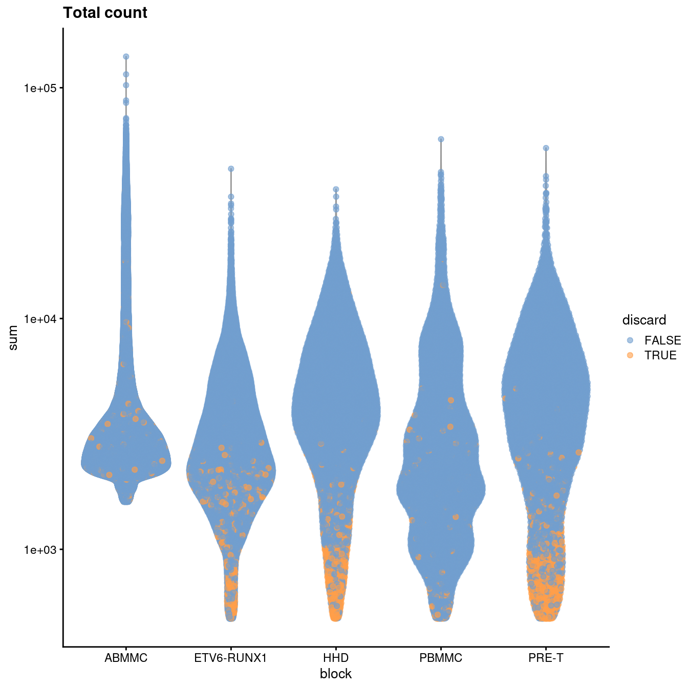
Number of genes detected:
plotColData(sce, x="block", y="detected", colour_by="discard",
other_fields="setName") +
#facet_wrap(~setName) +
scale_y_log10() + ggtitle("Detected features")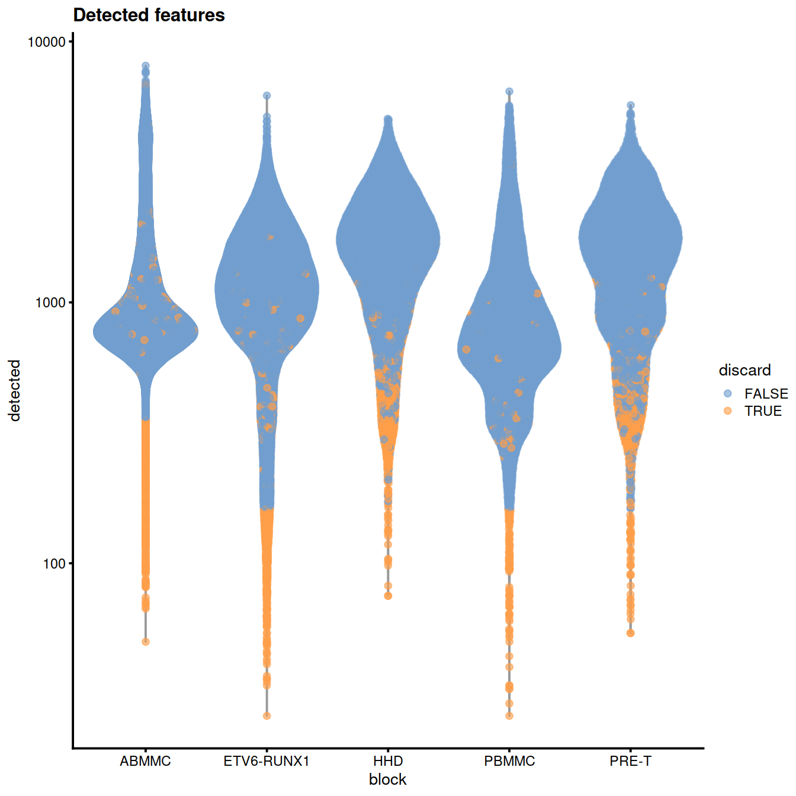
plotColData(sce, x="block", y="detected", colour_by="discard",
other_fields="setName") +
facet_wrap(~colour_by) +
scale_y_log10() + ggtitle("Detected features")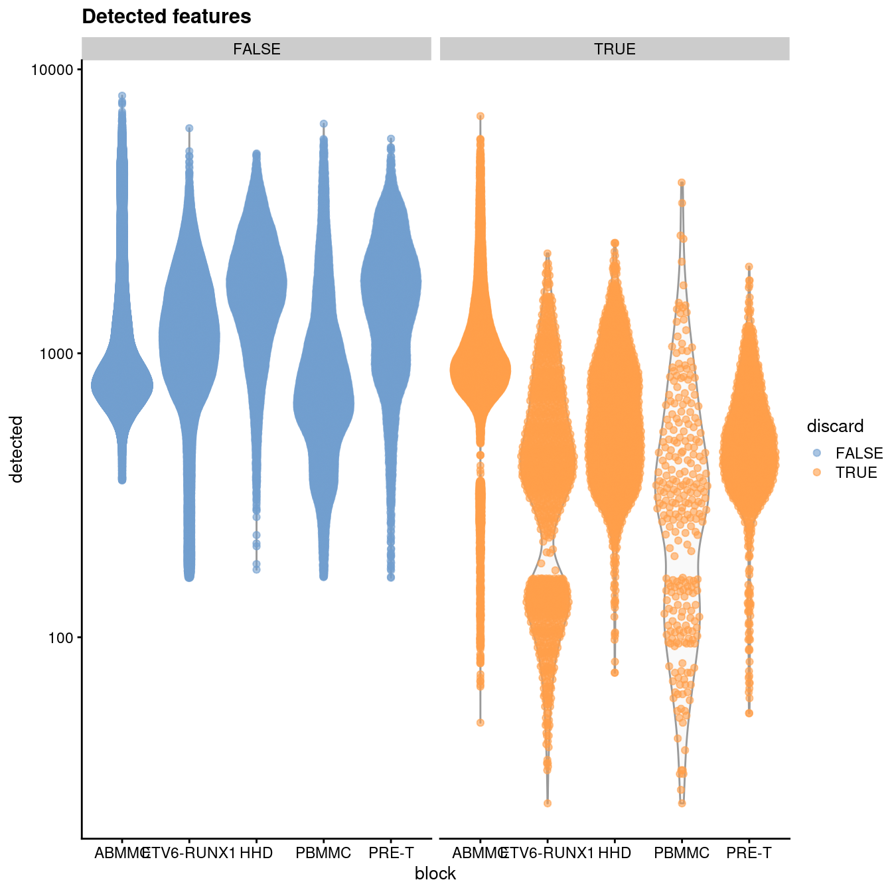
Mitochondrial content:
plotColData(sce, x="block", y="subsets_Mito_percent",
colour_by="discard", other_fields="setName") +
#facet_wrap(~setName) +
ggtitle("Mito percent")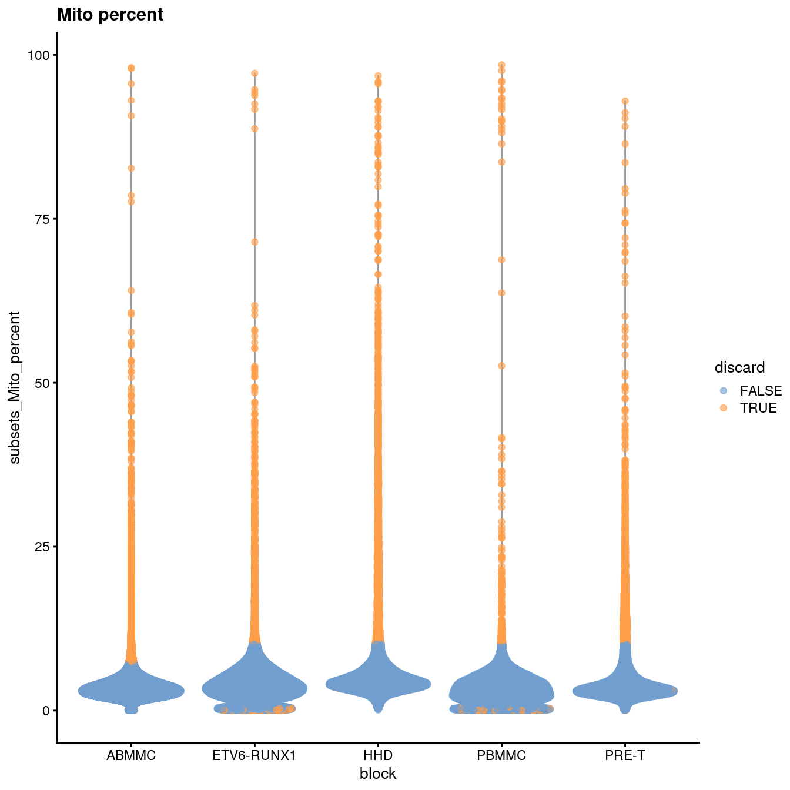
sp <- ggplot(data.frame(colData(sce)),
aes(x=detected, y=subsets_Mito_percent, col=discard)) +
geom_point(size = 0.05, alpha = 0.2) +
geom_density_2d(size = 0.5, colour = "blue") +
guides(colour = guide_legend(override.aes = list(size=1, alpha=1))) +
theme(legend.position="bottom")
#sp
ggExtra::ggMarginal(sp)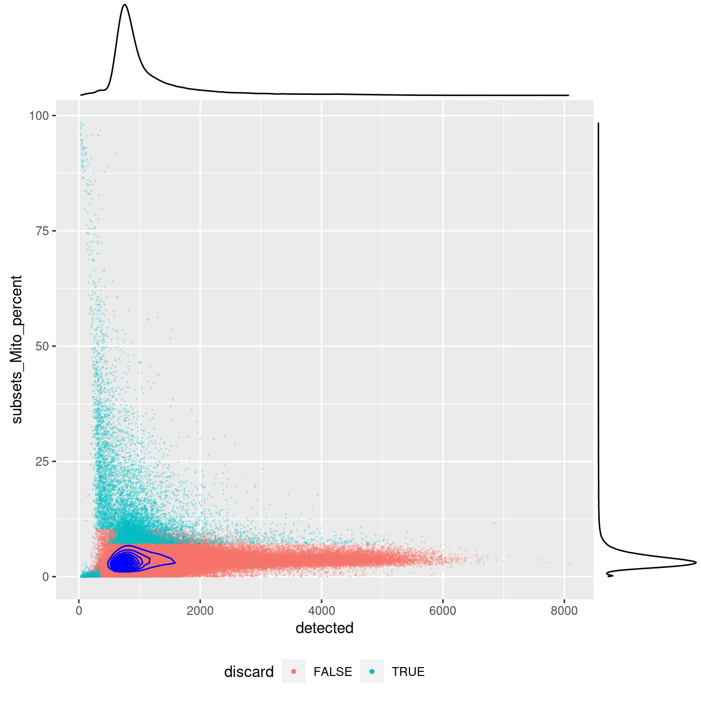
sp <- ggplot(data.frame(colData(sce)), aes(x=detected, y=subsets_Mito_percent, col=discard)) +
geom_point(size = 0.05, alpha = 0.2)
sp + facet_wrap(~source_name)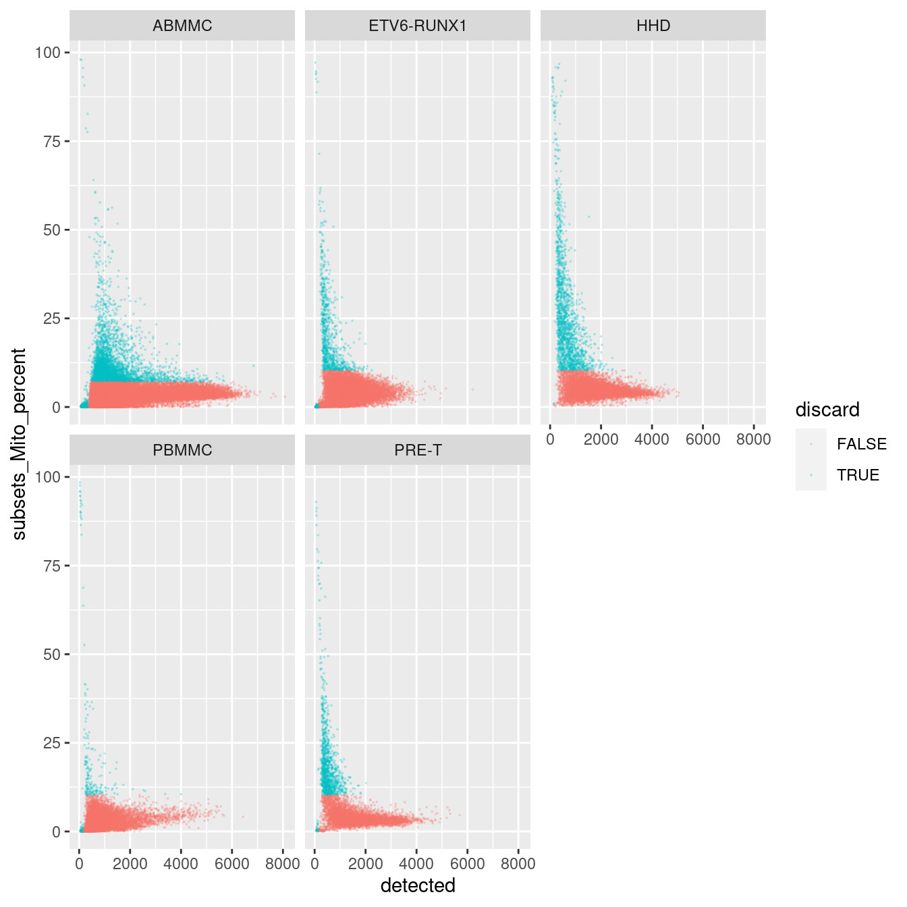
sp <- ggplot(data.frame(colData(sce)), aes(x=detected, y=subsets_Mito_percent)) +
geom_point(size = 0.05, alpha = 0.0)
sp +
#geom_density_2d_filled(alpha = 0.5) +
geom_density_2d(size = 0.5, colour = "black")sp <- ggplot(data.frame(colData(sce)), aes(x=detected, y=subsets_Mito_percent)) +
geom_point(size = 0.05, alpha = 0.2) +
geom_density_2d(size = 0.5, colour = "blue")
ggExtra::ggMarginal(sp)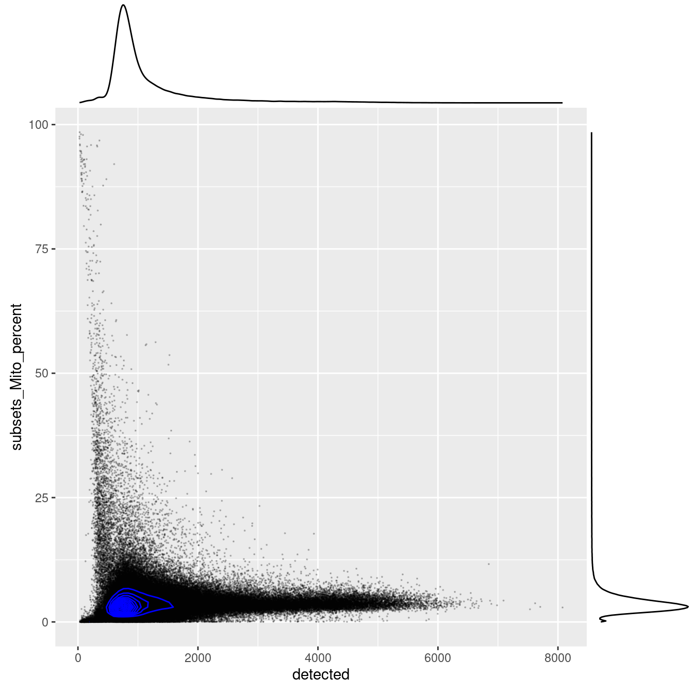
4.12.1 Identify poor-quality batches
We will now consider the ‘sample’ batch to illustrate how to identify batches with overall low quality or different from other batches. Let’s compare thresholds across sample groups.
4.12.1.1 Number of genes detected
# compute
discard.nexprs <- isOutlier(sce$detected, log=TRUE, type="lower", batch=sce$Sample.Name)
nexprs.thresholds <- attr(discard.nexprs, "thresholds")["lower",]
nexprs.thresholds %>%
round(0) %>%
as.data.frame() %>%
datatable(rownames = TRUE)Without block:
# plots - without blocking
discard.nexprs.woBlock <- isOutlier(sce$detected, log=TRUE, type="lower")
without.blocking <- plotColData(sce, x="Sample.Name", y="detected",
colour_by=I(discard.nexprs.woBlock))
without.blocking + theme(axis.text.x = element_text(angle = 90, hjust = 1))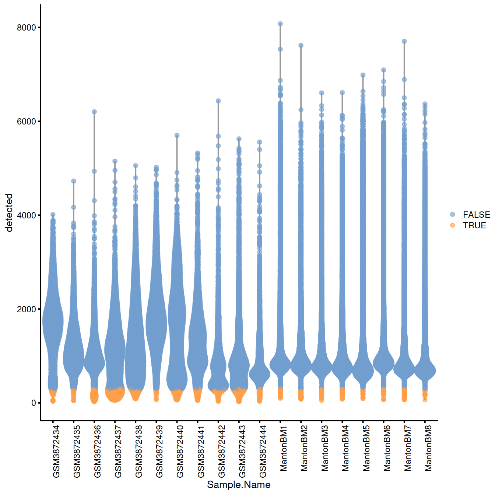
With block:
# plots - with blocking
with.blocking <- plotColData(sce, x="Sample.Name", y="detected",
colour_by=I(discard.nexprs))
with.blocking + theme(axis.text.x = element_text(angle = 90, hjust = 1))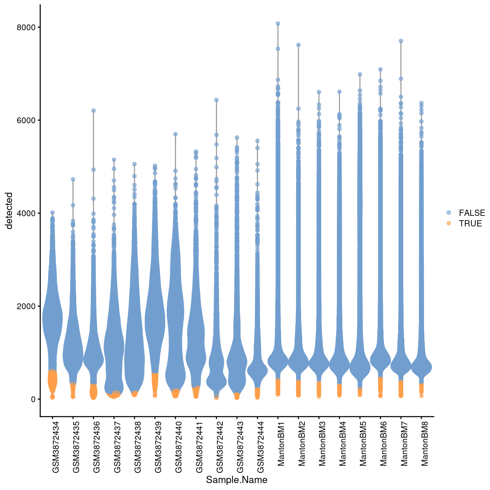
4.12.1.1.1 Mitochondrial content
discard.mito <- isOutlier(sce$subsets_Mito_percent, type="higher", batch=sce$Sample.Name)
mito.thresholds <- attr(discard.mito, "thresholds")["higher",]
mito.thresholds %>%
round(0) %>%
as.data.frame() %>%
datatable(rownames = TRUE)Without block:
# plots - without blocking
discard.mito.woBlock <- isOutlier(sce$subsets_Mito_percent, type="higher")
without.blocking <- plotColData(sce, x="Sample.Name", y="subsets_Mito_percent",
colour_by=I(discard.mito.woBlock))
without.blocking + theme(axis.text.x = element_text(angle = 90, hjust = 1))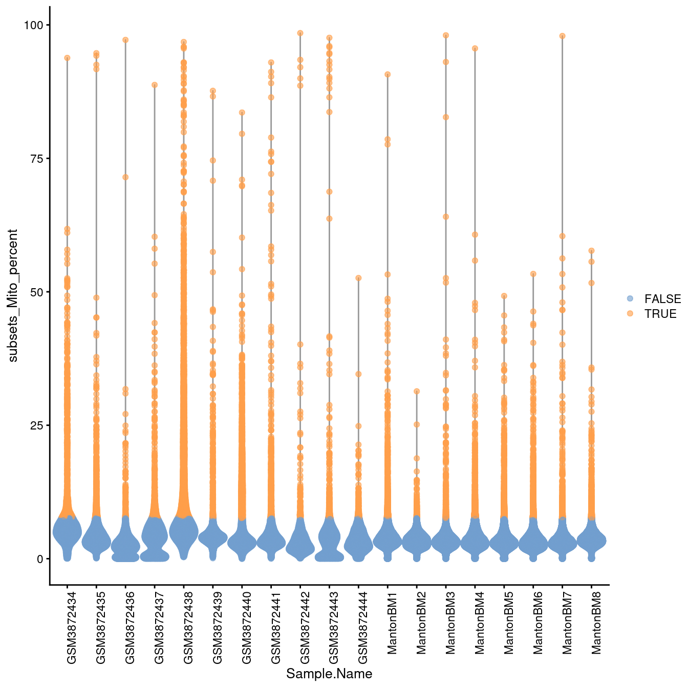
With block:
# plots - with blocking
with.blocking <- plotColData(sce, x="Sample.Name", y="subsets_Mito_percent",
colour_by=I(discard.mito))
with.blocking + theme(axis.text.x = element_text(angle = 90, hjust = 1))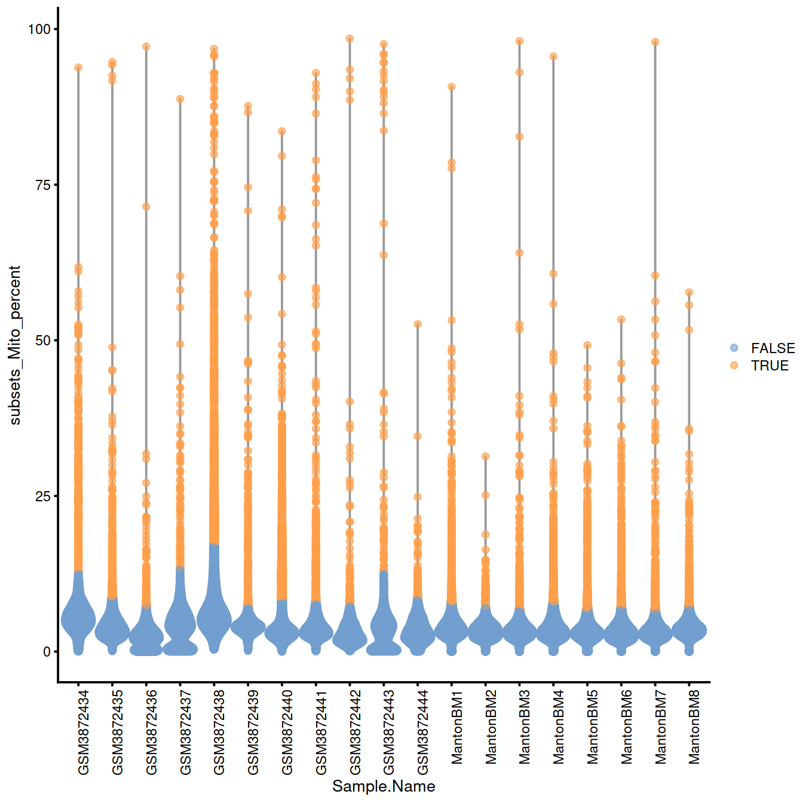
4.12.1.2 Samples to check
Names of samples with a ‘low’ threshold for the number of genes detected:
## character(0)Names of samples with a ‘high’ threshold for mitocondrial content:
## [1] "GSM3872434" "GSM3872437" "GSM3872438" "GSM3872443"4.12.2 QC metrics space
A similar approach exists to identify outliers using a set of metrics together. We will the same QC metrics as above:
# slow
stats <- cbind(log10(sce$sum),
log10(sce$detected),
sce$subsets_Mito_percent)
library(robustbase)
outlying <- adjOutlyingness(stats, only.outlyingness = TRUE)
multi.outlier <- isOutlier(outlying, type = "higher")## Mode FALSE TRUE
## logical 232401 16453Compare with previous filtering:
## multi.outlier
## FALSE TRUE
## FALSE 226413 10427
## TRUE 5988 60264.12.3 QC PCA
One can also perform a principal components analysis (PCA) on cells, based on the column metadata in a SingleCellExperiment object. Here we will only use the library size, the number of genes detected (which is correlated with library size) and the mitochondrial content.
sce <- runColDataPCA(sce, variables=list(
"sum", "detected", "subsets_Mito_percent"),
outliers=TRUE)
#reducedDimNames(sce)
#head(reducedDim(sce))
#head(colData(sce))
#p <- plotReducedDim(sce, dimred="PCA_coldata", colour_by = "Sample.Name")
p <- plotReducedDim(sce, dimred="PCA_coldata", colour_by = "outlier")
p + facet_wrap(~sce$discard)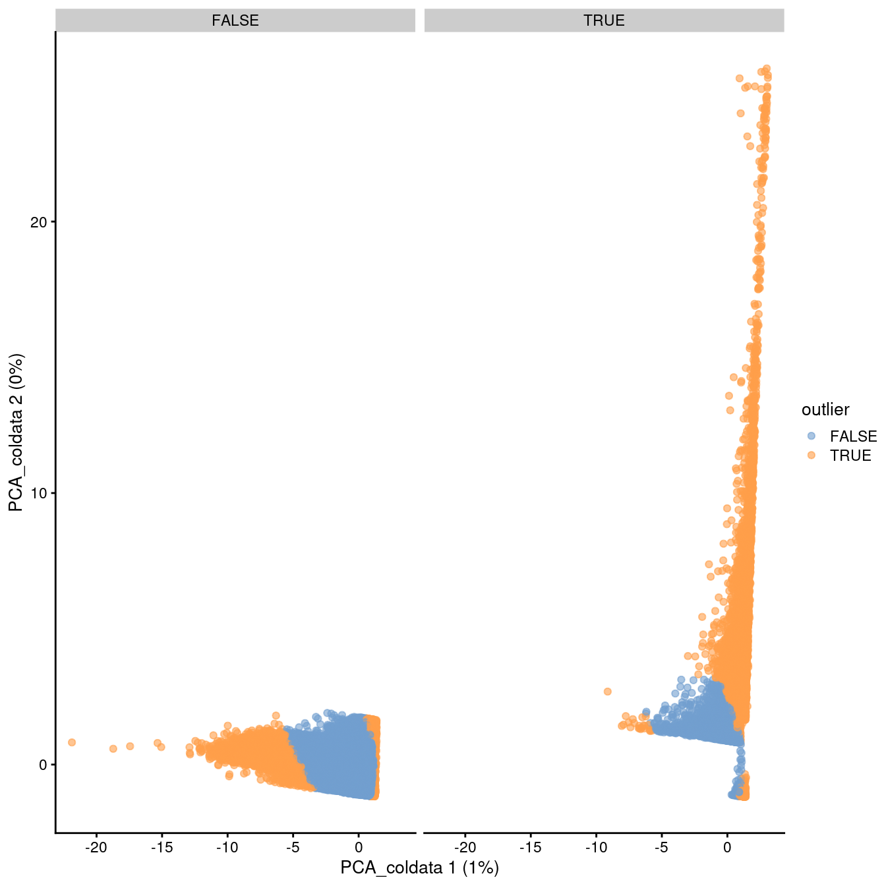
Compare with previous filtering:
discardandrunColDataPCA’soutlier:
##
## FALSE TRUE
## FALSE 227999 8841
## TRUE 5611 6403adjOutlyingness’multi.outlierandrunColDataPCA’soutlier:
##
## multi.outlier FALSE TRUE
## FALSE 226248 6153
## TRUE 7362 90914.12.4 Other diagnostic plots
Mitochondrial content against library size:
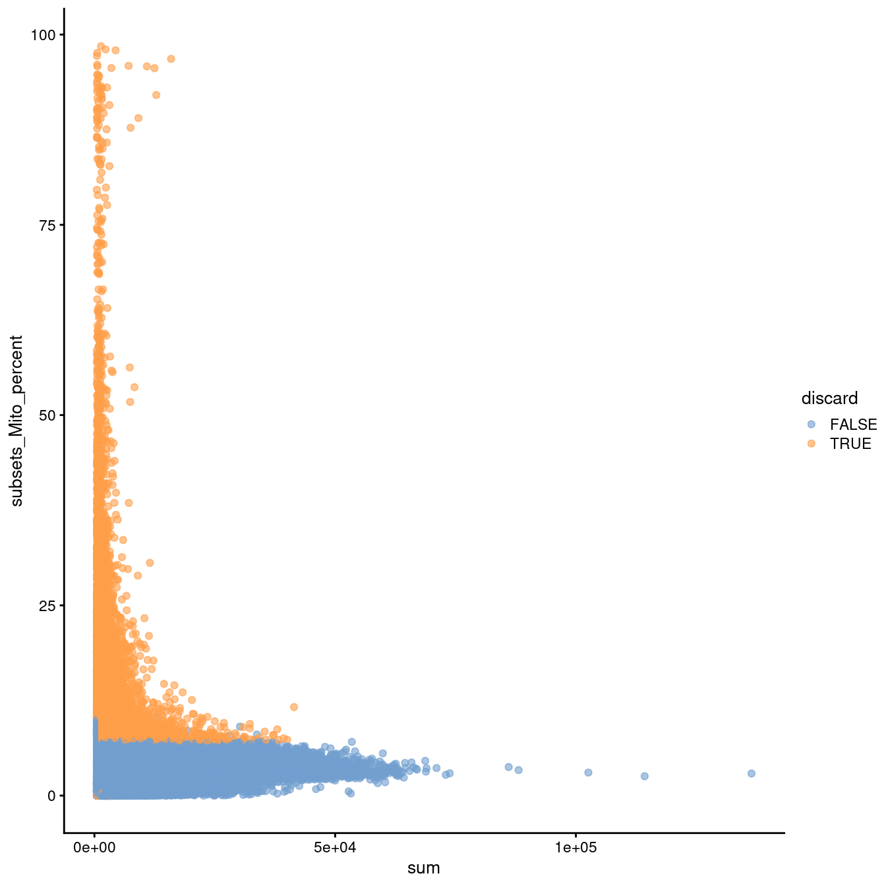
sp <- ggplot(data.frame(colData(sce)),
aes(x=sum, y=subsets_Mito_percent, col=discard)) +
geom_point(size = 0.05, alpha = 0.7) +
geom_density_2d(size = 0.5, colour = "blue") +
guides(colour = guide_legend(override.aes = list(size=1, alpha=1))) +
theme(legend.position="bottom")
#sp
ggExtra::ggMarginal(sp)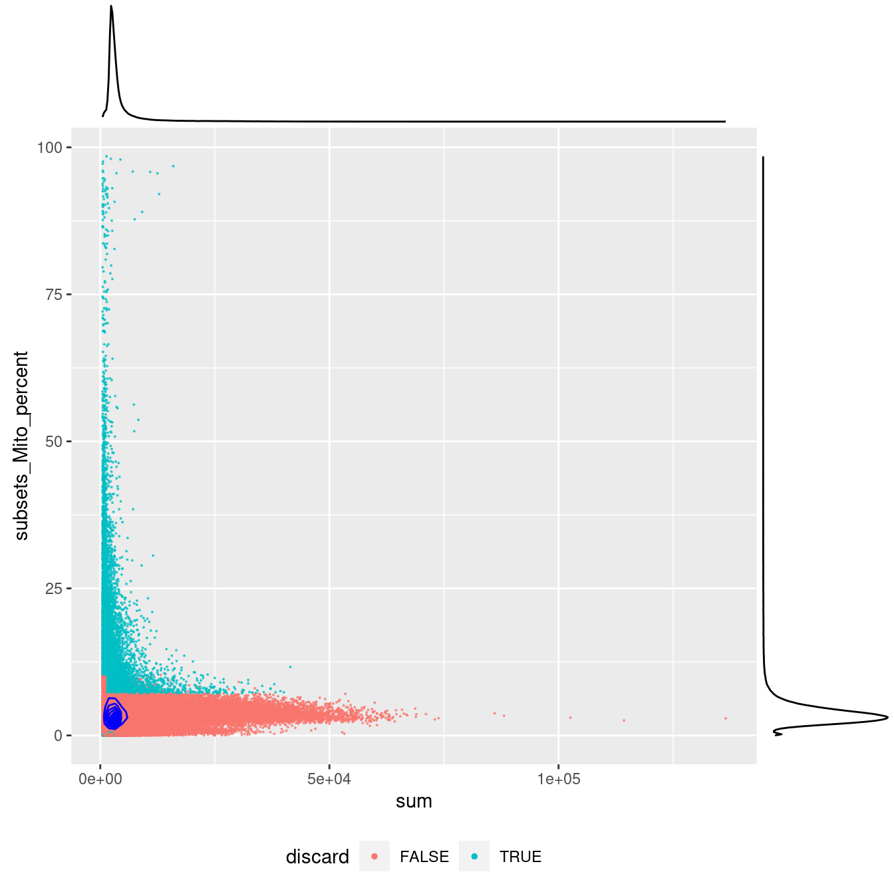
Mind distributions:
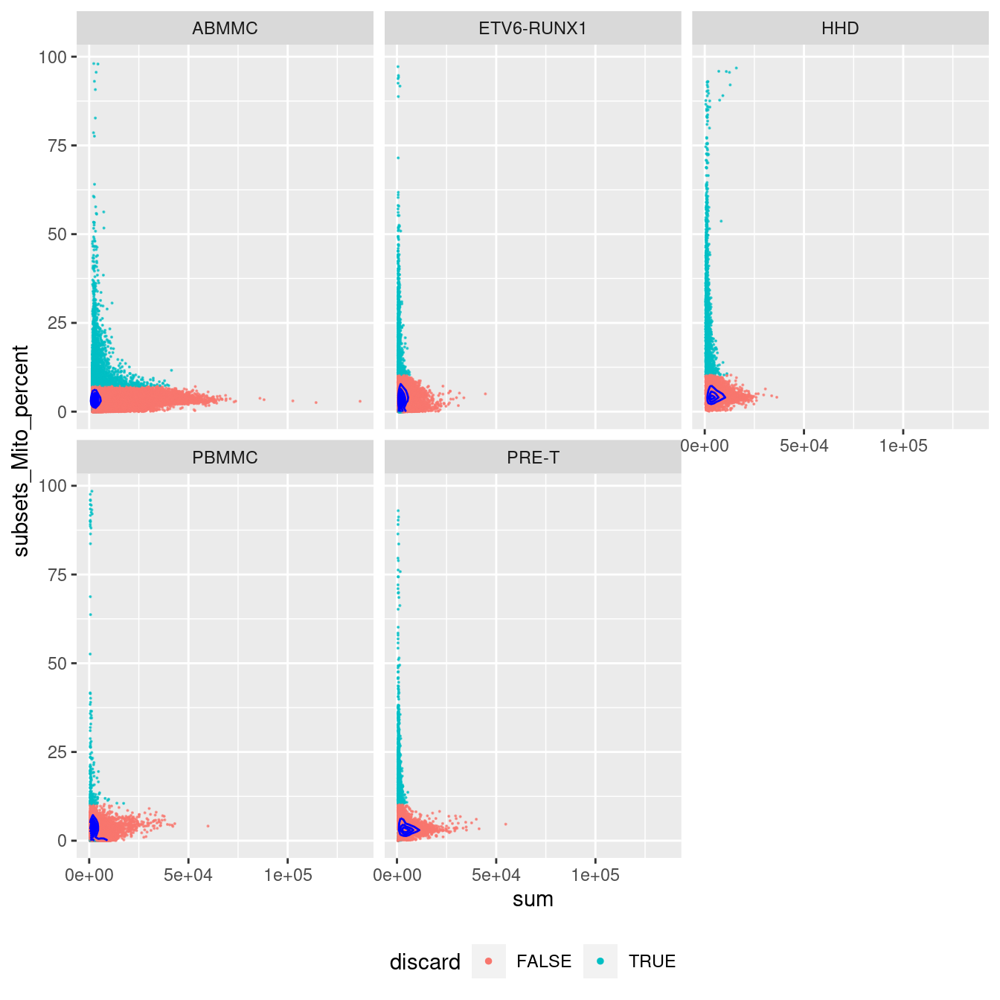
4.12.5 Filter low-quality cells out
We will now exclude poor-quality cells.
## class: SingleCellExperiment
## dim: 33538 236840
## metadata(20): Samples Samples ... Samples Samples
## assays(1): counts
## rownames(33538): ENSG00000243485 ENSG00000237613 ... ENSG00000277475
## ENSG00000268674
## rowData names(10): ensembl_gene_id external_gene_name ... mean detected
## colnames: NULL
## colData names(15): Sample Barcode ... discard outlier
## reducedDimNames(1): PCA_coldata
## altExpNames(0):We also write the R object to file to use later if need be.
# Write object to file
tmpFn <- sprintf("%s/%s/Robjects/sce_postQc%s.Rds",
projDir, outDirBit, setSuf)
saveRDS(sce, tmpFn)# Read object in:
tmpFn <- sprintf("%s/%s/Robjects/sce_postQc%s.Rds",
projDir, outDirBit, setSuf)
print("DEV"); print(getwd()); print(tmpFn)## [1] "DEV"## [1] "/ssd/personal/baller01/20200511_FernandesM_ME_crukBiSs2020/AnaWiSce/Ana1/ScriptsMkWiC"## [1] "/ssd/personal/baller01/20200511_FernandesM_ME_crukBiSs2020/AnaWiSce/Ana1/Robjects/sce_postQc_allCells.Rds"4.13 Novelty
The number of genes per UMI for each cell informs on the level of sequencing saturation achieved ( hbctraining). For a given cell, as sequencing depth increases each extra UMI is less likely to correspnf to a gene not already detected in that cell. Cells with small library size tend to have higher overall ‘novelty’ i.e. they have not reached saturation for any given gene. Outlier cell may have a library with low complexity. This may suggest the some cell types, e.g. red blood cells. The expected novelty is about 0.8.
Here we see that some PBMMCs have low novelty, ie overall fewer genes were detected for an equivalent number of UMIs in these cells than in others.
p <- colData(sce) %>%
data.frame() %>%
ggplot(aes(x=sum, y=detected, color=subsets_Mito_percent)) +
geom_point() +
stat_smooth(method=lm) +
scale_x_log10() +
scale_y_log10() +
geom_vline(xintercept = 800) +
facet_wrap(~source_name)
p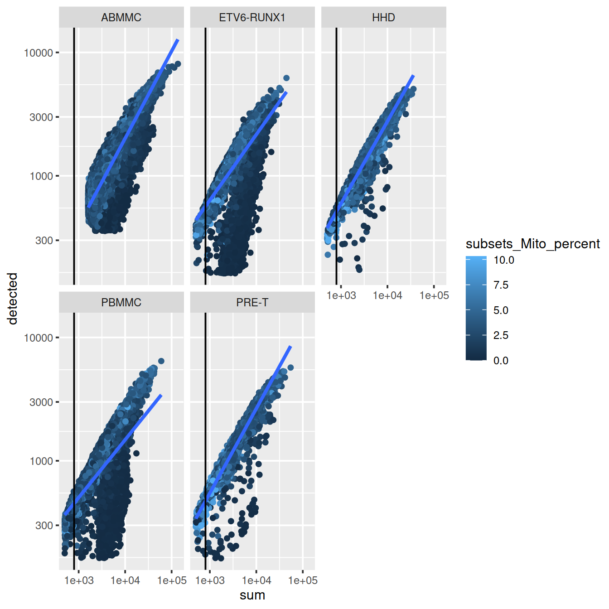
# write plot to file
tmpFn <- sprintf("%s/%s/%s/novelty_scat%s.png",
projDir, outDirBit, qcPlotDirBit, setSuf)
print("DEV"); print(getwd()); print(tmpFn)## [1] "DEV"## [1] "/ssd/personal/baller01/20200511_FernandesM_ME_crukBiSs2020/AnaWiSce/Ana1/ScriptsMkWiC"## [1] "/ssd/personal/baller01/20200511_FernandesM_ME_crukBiSs2020/AnaWiSce/Ana1/Plots/Qc/novelty_scat_allCells.png"##ggsave(plot=p, file=tmpFn)
# Novelty
# the number of genes per UMI for each cell,
# https://hbctraining.github.io/In-depth-NGS-Data-Analysis-Course/sessionIV/lessons/SC_quality_control_analysis.html
# Add number of UMIs per gene for each cell to metadata
colData(sce)$log10GenesPerUMI <- log10(colData(sce)$detected) / log10(colData(sce)$sum)#```{r novelty_dens_allCells, cache.lazy = FALSE}
# Visualize the overall novelty of the gene expression by visualizing the genes detected per UMI
p <- colData(sce) %>%
data.frame() %>%
ggplot(aes(x=log10GenesPerUMI, color = source_name, fill = source_name)) +
geom_density()
p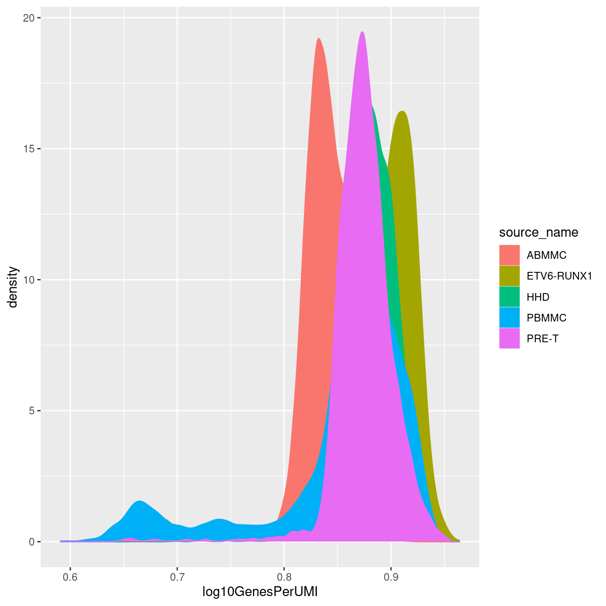
tmpFn <- sprintf("%s/%s/%s/novelty_dens%s.png",
projDir, outDirBit, qcPlotDirBit, setSuf)
print("DEV"); print(getwd()); print(tmpFn)## [1] "DEV"## [1] "/ssd/personal/baller01/20200511_FernandesM_ME_crukBiSs2020/AnaWiSce/Ana1/ScriptsMkWiC"## [1] "/ssd/personal/baller01/20200511_FernandesM_ME_crukBiSs2020/AnaWiSce/Ana1/Plots/Qc/novelty_dens_allCells.png"4.14 QC based on sparsity
The approach above identified poor-quality using thresholds on the number of genes detected and mitochondrial content. We will here specifically look at the sparsity of the data, both at the gene and cell levels.
4.14.1 Remove genes that are not expressed at all
Genes that are not expressed at all are not informative, so we remove them
not.expressed <- rowSums(counts(scePreQc)) == 0
# store the cell-wise information
cols.meta <- colData(scePreQc)
rows.meta <- rowData(scePreQc)
nz.counts <- counts(scePreQc)[!not.expressed, ]
sce.nz <- SingleCellExperiment(list(counts=nz.counts))
# reset the column data on the new object
colData(sce.nz) <- cols.meta
rowData(sce.nz) <- rows.meta[!not.expressed, ]
sce.nz# Write object to file
tmpFn <- sprintf("%s/%s/Robjects/sce_nz%s.Rds",
projDir, outDirBit, setSuf)
saveRDS(sce.nz, tmpFn)# Write object to file
tmpFn <- sprintf("%s/%s/Robjects/sce_nz%s.Rds",
projDir, outDirBit, setSuf)
sce.nz <- readRDS(tmpFn)Number of genes 27795.
Number of cells 248854.
4.14.2 Sparsity plots
We will compute:
- the cell sparsity: for each cell, the proportion of genes that are not detected
- the gene sparsity: for each gene, the proportion of cells in which it is not detected
# compute - SLOW
cell_sparsity <- apply(counts(sce.nz) == 0, 2, sum)/nrow(counts(sce.nz))
gene_sparsity <- apply(counts(sce.nz) == 0, 1, sum)/ncol(counts(sce.nz))
colData(sce.nz)$cell_sparsity <- cell_sparsity
rowData(sce.nz)$gene_sparsity <- gene_sparsity
# write outcome to file for later use
tmpFn <- sprintf("%s/%s/Robjects/sce_nz_sparsityCellGene%s.Rds",
projDir, outDirBit, setSuf)
saveRDS(list("colData" = colData(sce.nz),
"rowData" = rowData(sce.nz)),
tmpFn)# Read object in:
tmpFn <- sprintf("%s/%s/Robjects/sce_nz_sparsityCellGene%s.Rds",
projDir, outDirBit, setSuf)
tmpList <- readRDS(tmpFn)
cell_sparsity <- tmpList$colData$cell_sparsity
gene_sparsity <- tmpList$rowData$gene_sparsityWe now plot the distribution of these two metrics.
The cell sparsity plot shows that cells have between 85% and 99% 0’s, which is typical.
The gene sparsity plot shows that a large number of genes are almost never detected, which is alo regularly observed.
#```{r sparsity_plot_allCells, eval=runAll}
# plot
tmpFn <- sprintf("%s/%s/%s/sparsity%s.png",
projDir, outDirBit, qcPlotDirBit, setSuf)
print("DEV"); print(getwd()); print(tmpFn)## [1] "DEV"## [1] "/ssd/personal/baller01/20200511_FernandesM_ME_crukBiSs2020/AnaWiSce/Ana1/ScriptsMkWiC"## [1] "/ssd/personal/baller01/20200511_FernandesM_ME_crukBiSs2020/AnaWiSce/Ana1/Plots/Qc/sparsity_allCells.png"##png(tmpFn)
##par(mfrow=c(1, 2))
##hist(cell_sparsity, breaks=50, col="grey80", xlab="Cell sparsity", main="")
##hist(gene_sparsity, breaks=50, col="grey80", xlab="Gene sparsity", main="")
##abline(v=40, lty=2, col='purple')
##dev.off()tmpFn <- sprintf("%s/%s/sparsity%s.png",
dirRel, qcPlotDirBit, setSuf)
knitr::include_graphics(tmpFn, auto_pdf = TRUE)
4.14.3 Filters
We also remove cells with sparsity higher than 0.99, and/or mitochondrial content higher than 20%.
Genes detected in a few cells only are unlikely to be informative and would hinder normalisation. We will remove genes that are expressed in fewer than 20 cells.
# filter
sparse.cells <- cell_sparsity > 0.99
mito.cells <- sce.nz$subsets_Mito_percent > 20
min.cells <- 1 - (20/length(cell_sparsity))
sparse.genes <- gene_sparsity > min.cellsNumber of genes removed:
## sparse.genes
## FALSE TRUE
## 21579 6216Number of cells removed:
## mito.cells
## sparse.cells FALSE TRUE
## FALSE 244996 1785
## TRUE 1859 214# remove cells from the SCE object that are poor quality
# remove the sparse genes, then re-set the counts and row data accordingly
cols.meta <- colData(sce.nz)
rows.meta <- rowData(sce.nz)
counts.nz <- counts(sce.nz)[!sparse.genes, !(sparse.cells | mito.cells)]
sce.nz <- SingleCellExperiment(assays=list(counts=counts.nz))
colData(sce.nz) <- cols.meta[!(sparse.cells | mito.cells),]
rowData(sce.nz) <- rows.meta[!sparse.genes, ]
sce.nz# Write object to file
tmpFn <- sprintf("%s/%s/Robjects/sce_nz_postQc%s.Rds",
projDir, outDirBit, setSuf)
saveRDS(sce.nz, tmpFn)# Read object in:
tmpFn <- sprintf("%s/%s/Robjects/sce_nz_postQc%s.Rds",
projDir, outDirBit, setSuf)
print("DEV"); print(getwd()); print(tmpFn)## [1] "DEV"## [1] "/ssd/personal/baller01/20200511_FernandesM_ME_crukBiSs2020/AnaWiSce/Ana1/ScriptsMkWiC"## [1] "/ssd/personal/baller01/20200511_FernandesM_ME_crukBiSs2020/AnaWiSce/Ana1/Robjects/sce_nz_postQc_allCells.Rds"Compare with filter above (mind that the comparison is not fair because we used a less stringent, hard filtering on mitochondrial content):
##
## FALSE TRUE
## FALSE 235832 1008
## TRUE 9164 28504.14.4 Separate Caron and Hca batches
We will now check sparsity for each batch separately.
4.14.5 Caron only
# compute - SLOW
cell_sparsity <- apply(counts(sce.x) == 0, 2, sum)/nrow(counts(sce.x))
gene_sparsity <- apply(counts(sce.x) == 0, 1, sum)/ncol(counts(sce.x))
colData(sce.x)$cell_sparsity <- cell_sparsity
rowData(sce.x)$gene_sparsity <- gene_sparsity
# write outcome to file for later use
tmpFn <- sprintf("%s/%s/Robjects/%s_sce_nz_sparsityCellGene%s.Rds",
projDir, outDirBit, setName, setSuf)
saveRDS(list("colData" = colData(sce.x),
"rowData" = rowData(sce.x)),
tmpFn)# Read object in:
tmpFn <- sprintf("%s/%s/Robjects/%s_sce_nz_sparsityCellGene%s.Rds",
projDir, outDirBit, setName, setSuf)
tmpList <- readRDS(tmpFn)
cell_sparsity <- tmpList$colData$cell_sparsity
gene_sparsity <- tmpList$rowData$gene_sparsity# plot
tmpFn <- sprintf("%s/%s/%s/%s_sparsity%s.png",
projDir, outDirBit, qcPlotDirBit, setName, setSuf)
png(tmpFn)
par(mfrow=c(1, 2))
hist(cell_sparsity, breaks=50, col="grey80", xlab="Cell sparsity", main="")
hist(gene_sparsity, breaks=50, col="grey80", xlab="Gene sparsity", main="")
abline(v=40, lty=2, col='purple')
dev.off()tmpFn <- sprintf("%s/%s/%s_sparsity%s.png",
dirRel, qcPlotDirBit, setName, setSuf)
knitr::include_graphics(tmpFn, auto_pdf = TRUE)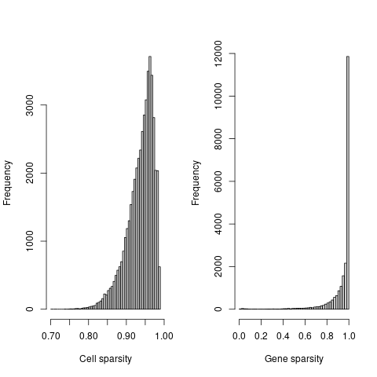
# filter
sparse.cells <- cell_sparsity > 0.99
mito.cells <- sce.x$subsets_Mito_percent > 20
min.cells <- 1 - (20/length(cell_sparsity))
sparse.genes <- gene_sparsity > min.cells# remove cells from the SCE object that are poor quality
# remove the sparse genes, then re-set the counts and row data accordingly
cols.meta <- colData(sce.x)
rows.meta <- rowData(sce.x)
counts.x <- counts(sce.x)[!sparse.genes, !(sparse.cells | mito.cells)]
sce.x <- SingleCellExperiment(assays=list(counts=counts.x))
colData(sce.x) <- cols.meta[!(sparse.cells | mito.cells),]
rowData(sce.x) <- rows.meta[!sparse.genes, ]
sce.xWe write the R object to caron_sce_nz_postQc_allCells.Rds.
4.14.6 Hca only
# compute - SLOW
cell_sparsity <- apply(counts(sce.x) == 0, 2, sum)/nrow(counts(sce.x))
gene_sparsity <- apply(counts(sce.x) == 0, 1, sum)/ncol(counts(sce.x))
colData(sce.x)$cell_sparsity <- cell_sparsity
rowData(sce.x)$gene_sparsity <- gene_sparsity
# write outcome to file for later use
tmpFn <- sprintf("%s/%s/Robjects/%s_sce_nz_sparsityCellGene%s.Rds",
projDir, outDirBit, setName, setSuf)
saveRDS(list("colData" = colData(sce.x),
"rowData" = rowData(sce.x)),
tmpFn)# Read object in:
tmpFn <- sprintf("%s/%s/Robjects/%s_sce_nz_sparsityCellGene%s.Rds",
projDir, outDirBit, setName, setSuf)
tmpList <- readRDS(tmpFn)
cell_sparsity <- tmpList$colData$cell_sparsity
gene_sparsity <- tmpList$rowData$gene_sparsity#```{r Hca_sparsity_plot_allCells, eval=runAll}
# plot
tmpFn <- sprintf("%s/%s/%s/%s_sparsity%s.png",
projDir, outDirBit, qcPlotDirBit, setName, setSuf)
print("DEV"); print(getwd()); print(tmpFn)## [1] "DEV"## [1] "/ssd/personal/baller01/20200511_FernandesM_ME_crukBiSs2020/AnaWiSce/Ana1/ScriptsMkWiC"## [1] "/ssd/personal/baller01/20200511_FernandesM_ME_crukBiSs2020/AnaWiSce/Ana1/Plots/Qc/hca_sparsity_allCells.png"##png(tmpFn)
##par(mfrow=c(1, 2))
##hist(cell_sparsity, breaks=50, col="grey80", xlab="Cell sparsity", main="")
##hist(gene_sparsity, breaks=50, col="grey80", xlab="Gene sparsity", main="")
##abline(v=40, lty=2, col='purple')
##dev.off()#tmpFn <- sprintf("%s/%s/%s/%s_sparsity.png", projDir, outDirBit, qcPlotDirBit, setName)
tmpFn <- sprintf("%s/%s/%s_sparsity%s.png",
dirRel, qcPlotDirBit, setName, setSuf)
knitr::include_graphics(tmpFn, auto_pdf = TRUE)
# filter
sparse.cells <- cell_sparsity > 0.99
mito.cells <- sce.x$subsets_Mito_percent > 20
min.cells <- 1 - (20/length(cell_sparsity))
sparse.genes <- gene_sparsity > min.cells# remove cells from the SCE object that are poor quality
# remove the sparse genes, then re-set the counts and row data accordingly
cols.meta <- colData(sce.x)
rows.meta <- rowData(sce.x)
counts.x <- counts(sce.x)[!sparse.genes, !(sparse.cells | mito.cells)]
sce.x <- SingleCellExperiment(assays=list(counts=counts.x))
colData(sce.x) <- cols.meta[!(sparse.cells | mito.cells),]
rowData(sce.x) <- rows.meta[!sparse.genes, ]
sce.xWe write the R object to hca_sce_nz_postQc_allCells.Rds.
4.15 Subsample Hca set
The HCA data comprises about 25,000 cells per samples, compared to 5,000 for the Caron study. We will randomly subsample the HCA samples down to 5000 cells.
sce.nz.hca
# have new list of cell barcodes for each sample
sce.nz.hca.5k.bc <- colData(sce.nz.hca) %>%
data.frame() %>%
group_by(Sample.Name) %>%
sample_n(5000) %>%
pull(Barcode)
table(colData(sce.nz.hca)$Barcode %in% sce.nz.hca.5k.bc)
tmpInd <- which(colData(sce.nz.hca)$Barcode %in% sce.nz.hca.5k.bc)
sce.nz.hca.5k <- sce.nz.hca[,tmpInd]
# mind that genes were filtered using all cells, not just those sampled here.We write the R object to ‘hca_sce_nz_postQc_5kCellPerSpl.Rds’.
# Write object to file
tmpFn <- sprintf("%s/%s/Robjects/%s_sce_nz_postQc_5kCellPerSpl.Rds", projDir, outDirBit, setName)
saveRDS(sce.nz.hca.5k, tmpFn)## used (Mb) gc trigger (Mb) max used (Mb)
## Ncells 9519624 508.5 16305648 870.9 16305648 870.9
## Vcells 1421357338 10844.1 2765812427 21101.5 2297115936 17525.74.16 Session information
## R version 4.0.3 (2020-10-10)
## Platform: x86_64-pc-linux-gnu (64-bit)
## Running under: CentOS Linux 8
##
## Matrix products: default
## BLAS: /opt/R/R-4.0.3/lib64/R/lib/libRblas.so
## LAPACK: /opt/R/R-4.0.3/lib64/R/lib/libRlapack.so
##
## locale:
## [1] LC_CTYPE=en_GB.UTF-8 LC_NUMERIC=C
## [3] LC_TIME=en_GB.UTF-8 LC_COLLATE=en_GB.UTF-8
## [5] LC_MONETARY=en_GB.UTF-8 LC_MESSAGES=en_GB.UTF-8
## [7] LC_PAPER=en_GB.UTF-8 LC_NAME=C
## [9] LC_ADDRESS=C LC_TELEPHONE=C
## [11] LC_MEASUREMENT=en_GB.UTF-8 LC_IDENTIFICATION=C
##
## attached base packages:
## [1] stats4 parallel stats graphics grDevices utils datasets
## [8] methods base
##
## other attached packages:
## [1] BiocSingular_1.6.0 scuttle_1.0.4
## [3] robustbase_0.93-7 mixtools_1.2.0
## [5] irlba_2.3.3 biomaRt_2.46.3
## [7] Matrix_1.2-18 igraph_1.2.6
## [9] DropletUtils_1.10.3 scater_1.18.6
## [11] ggplot2_3.3.3 scran_1.18.7
## [13] SingleCellExperiment_1.12.0 SummarizedExperiment_1.20.0
## [15] Biobase_2.50.0 GenomicRanges_1.42.0
## [17] GenomeInfoDb_1.26.7 IRanges_2.24.1
## [19] S4Vectors_0.28.1 BiocGenerics_0.36.1
## [21] MatrixGenerics_1.2.1 matrixStats_0.58.0
## [23] dplyr_1.0.5 DT_0.18
## [25] knitr_1.32
##
## loaded via a namespace (and not attached):
## [1] BiocFileCache_1.14.0 splines_4.0.3
## [3] BiocParallel_1.24.1 crosstalk_1.1.1
## [5] digest_0.6.27 htmltools_0.5.1.1
## [7] viridis_0.5.1 fansi_0.4.2
## [9] magrittr_2.0.1 memoise_2.0.0
## [11] limma_3.46.0 readr_1.4.0
## [13] R.utils_2.10.1 askpass_1.1
## [15] prettyunits_1.1.1 colorspace_2.0-0
## [17] blob_1.2.1 rappdirs_0.3.1
## [19] xfun_0.22 crayon_1.4.1
## [21] RCurl_1.98-1.3 jsonlite_1.7.2
## [23] survival_3.2-7 glue_1.4.2
## [25] gtable_0.3.0 zlibbioc_1.36.0
## [27] XVector_0.30.0 DelayedArray_0.16.3
## [29] kernlab_0.9-29 Rhdf5lib_1.12.1
## [31] DEoptimR_1.0-8 HDF5Array_1.18.1
## [33] scales_1.1.1 DBI_1.1.1
## [35] edgeR_3.32.1 miniUI_0.1.1.1
## [37] Rcpp_1.0.6 isoband_0.2.4
## [39] xtable_1.8-4 viridisLite_0.3.0
## [41] progress_1.2.2 dqrng_0.2.1
## [43] bit_4.0.4 rsvd_1.0.3
## [45] htmlwidgets_1.5.3 httr_1.4.2
## [47] ellipsis_0.3.1 pkgconfig_2.0.3
## [49] XML_3.99-0.5 R.methodsS3_1.8.1
## [51] farver_2.1.0 sass_0.3.1
## [53] dbplyr_2.0.0 locfit_1.5-9.4
## [55] utf8_1.2.1 later_1.1.0.1
## [57] tidyselect_1.1.0 labeling_0.4.2
## [59] rlang_0.4.10 AnnotationDbi_1.52.0
## [61] munsell_0.5.0 tools_4.0.3
## [63] cachem_1.0.4 generics_0.1.0
## [65] RSQLite_2.2.6 evaluate_0.14
## [67] stringr_1.4.0 fastmap_1.1.0
## [69] yaml_2.2.1 bit64_4.0.5
## [71] purrr_0.3.4 nlme_3.1-149
## [73] sparseMatrixStats_1.2.1 mime_0.10
## [75] R.oo_1.24.0 ggExtra_0.9
## [77] xml2_1.3.2 compiler_4.0.3
## [79] rstudioapi_0.13 beeswarm_0.2.3
## [81] curl_4.3 tibble_3.1.1
## [83] statmod_1.4.35 bslib_0.2.4
## [85] stringi_1.5.3 highr_0.8
## [87] lattice_0.20-41 bluster_1.0.0
## [89] vctrs_0.3.7 pillar_1.6.0
## [91] lifecycle_1.0.0 rhdf5filters_1.2.0
## [93] jquerylib_0.1.3 BiocNeighbors_1.8.2
## [95] cowplot_1.1.1 bitops_1.0-6
## [97] httpuv_1.5.5 R6_2.5.0
## [99] promises_1.1.1 bookdown_0.21
## [101] gridExtra_2.3 vipor_0.4.5
## [103] codetools_0.2-16 MASS_7.3-53
## [105] assertthat_0.2.1 rhdf5_2.34.0
## [107] openssl_1.4.3 withr_2.4.2
## [109] GenomeInfoDbData_1.2.4 mgcv_1.8-33
## [111] hms_1.0.0 grid_4.0.3
## [113] beachmat_2.6.4 rmarkdown_2.7
## [115] DelayedMatrixStats_1.12.3 segmented_1.3-3
## [117] shiny_1.5.0 ggbeeswarm_0.6.0